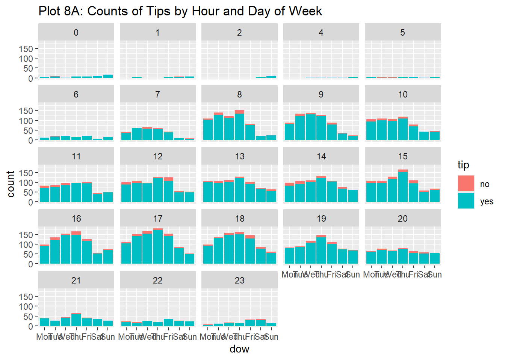
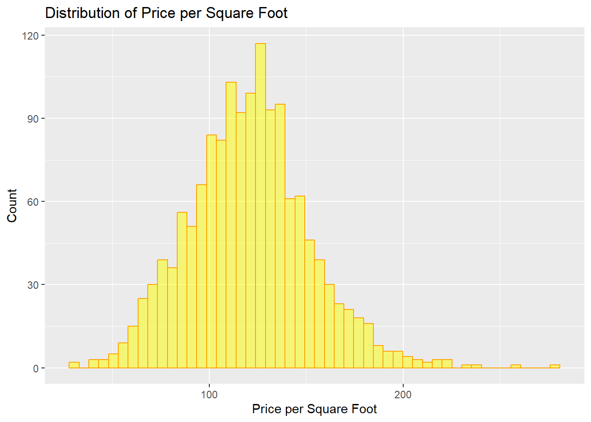

── Attaching core tidyverse packages ──────────────────────── tidyverse 2.0.0 ──
✔ dplyr 1.1.4 ✔ readr 2.1.5
✔ forcats 1.0.0 ✔ stringr 1.5.1
✔ ggplot2 3.5.1 ✔ tibble 3.2.1
✔ lubridate 1.9.3 ✔ tidyr 1.3.1
✔ purrr 1.0.2
── Conflicts ────────────────────────────────────────── tidyverse_conflicts() ──
✖ dplyr::filter() masks stats::filter()
✖ dplyr::lag() masks stats::lag()
ℹ Use the conflicted package (<http://conflicted.r-lib.org/>) to force all conflicts to become errors
library(mosaic)
Registered S3 method overwritten by 'mosaic':
method from
fortify.SpatialPolygonsDataFrame ggplot2
The 'mosaic' package masks several functions from core packages in order to add
additional features. The original behavior of these functions should not be affected by this.
Attaching package: 'mosaic'
The following object is masked from 'package:Matrix':
mean
The following objects are masked from 'package:dplyr':
count, do, tally
The following object is masked from 'package:purrr':
cross
The following object is masked from 'package:ggplot2':
stat
The following objects are masked from 'package:stats':
binom.test, cor, cor.test, cov, fivenum, IQR, median, prop.test,
quantile, sd, t.test, var
The following objects are masked from 'package:base':
max, mean, min, prod, range, sample, sum
library(ggformula)library(skimr)
Attaching package: 'skimr'
The following object is masked from 'package:mosaic':
n_missing
Rows: 10000 Columns: 8
── Column specification ────────────────────────────────────────────────────────
Delimiter: ","
chr (5): tip, company, local, dow, month
dbl (3): rownames, distance, hour
ℹ Use `spec()` to retrieve the full column specification for this data.
ℹ Specify the column types or set `show_col_types = FALSE` to quiet this message.
taxi
# A tibble: 10,000 × 8
rownames tip distance company local dow month hour
<dbl> <chr> <dbl> <chr> <chr> <chr> <chr> <dbl>
1 1 yes 17.2 Chicago Independents no Thu Feb 16
2 2 yes 0.88 City Service yes Thu Mar 8
3 3 yes 18.1 other no Mon Feb 18
4 4 yes 20.7 Chicago Independents no Mon Apr 8
5 5 yes 12.2 Chicago Independents no Sun Mar 21
6 6 yes 0.94 Sun Taxi yes Sat Apr 23
7 7 yes 17.5 Flash Cab no Fri Mar 12
8 8 yes 17.7 other no Sun Jan 6
9 9 yes 1.85 Taxicab Insurance Agency Llc no Fri Apr 12
10 10 yes 1.47 City Service no Tue Mar 14
# ℹ 9,990 more rows
The taxi dataset contains 10,000 entries, detailing information about individual taxi rides. It includes whether a tip was given, the distance of the ride, the company providing the service, and whether the ride was local. Additionally, it records the day of the week, the month, and the hour the ride took place. The dataset allows for analyzing patterns in tipping, ride distances, and usage trends by time (day, month, and hour) as well as comparing performance across different taxi companies. This can provide insights into ride behaviors and preferences.
This glimpse of the taxi dataset provides an overview of its 10,000 rows and 8 columns. This structure gives a clear, organized view of ride-specific information.
Inspect - taxi dataset
inspect(taxi)
categorical variables:
name class levels n missing
1 tip character 2 10000 0
2 company character 7 10000 0
3 local character 2 10000 0
4 dow character 7 10000 0
5 month character 4 10000 0
distribution
1 yes (92.1%), no (7.9%)
2 other (27.1%) ...
3 no (81.2%), yes (18.8%)
4 Thu (19.6%), Wed (17.5%), Tue (16.3%) ...
5 Apr (31.8%), Mar (31.4%), Feb (20.4%) ...
quantitative variables:
name class min Q1 median Q3 max mean
1 rownames numeric 1 2500.75 5000.50 7500.2500 10000.0 5000.500000
2 distance numeric 0 0.94 1.78 15.5625 42.3 6.224144
3 hour numeric 0 11.00 15.00 18.0000 23.0 14.177300
sd n missing
1 2886.895680 10000 0
2 7.381397 10000 0
3 4.359904 10000 0
The inspection of the taxi dataset shows that it contains 10,000 entries with both categorical and quantitative variables. The categorical variables include tip, company, local, dow (day of the week), and month, all of which are character types. For example, 92.1% of rides resulted in a tip, and 81.2% of the rides were local. The quantitative variables include rownames, distance, and hour, all of which are numeric. The distance of rides ranges from 0 to 42.3 miles, with a mean of 6.22 miles, and the hour variable represents the time of day, ranging from 0 to 23.
Skim - taxi dataset
skim(taxi)
Data summary
Name
taxi
Number of rows
10000
Number of columns
8
_______________________
Column type frequency:
character
5
numeric
3
________________________
Group variables
None
Variable type: character
skim_variable
n_missing
complete_rate
min
max
empty
n_unique
whitespace
tip
0
1
2
3
0
2
0
company
0
1
5
28
0
7
0
local
0
1
2
3
0
2
0
dow
0
1
3
3
0
7
0
month
0
1
3
3
0
4
0
Variable type: numeric
skim_variable
n_missing
complete_rate
mean
sd
p0
p25
p50
p75
p100
hist
rownames
0
1
5000.50
2886.90
1
2500.75
5000.50
7500.25
10000.0
▇▇▇▇▇
distance
0
1
6.22
7.38
0
0.94
1.78
15.56
42.3
▇▁▂▁▁
hour
0
1
14.18
4.36
0
11.00
15.00
18.00
23.0
▁▃▅▇▃
This summary provides a detailed breakdown of the dataset’s completeness and distribution, making it well-prepared for further analysis.
Rows: 10,000
Columns: 8
$ rownames <dbl> 1, 2, 3, 4, 5, 6, 7, 8, 9, 10, 11, 12, 13, 14, 15, 16, 17, 18…
$ tip <chr> "yes", "yes", "yes", "yes", "yes", "yes", "yes", "yes", "yes"…
$ distance <dbl> 17.19, 0.88, 18.11, 20.70, 12.23, 0.94, 17.47, 17.67, 1.85, 1…
$ company <chr> "Chicago Independents", "City Service", "other", "Chicago Ind…
$ local <ord> no, yes, no, no, no, yes, no, no, no, no, no, no, no, yes, no…
$ dow <ord> Thu, Thu, Mon, Mon, Sun, Sat, Fri, Sun, Fri, Tue, Tue, Sun, W…
$ month <ord> Feb, Mar, Feb, Apr, Mar, Apr, Mar, Jan, Apr, Mar, Mar, Apr, A…
$ hour <dbl> 16, 8, 18, 8, 21, 23, 12, 6, 12, 14, 18, 11, 12, 19, 17, 13, …
This modified version of the taxi dataset includes the conversion of several variables into factors with ordered levels. Specifically, the variables local, dow, and month have been converted into factors. Each has been assigned specific ordered levels. The local variable indicates whether a ride was local (“no” or “yes”), while dow is now ordered from Monday to Sunday, and month from January to April. This change improves the dataset for analysis where the natural order of days and months is important, making it easier to perform time-based analyses or comparisons.
Plot 1A: Counts of Tips
gf_bar(~tip, data = taxi_modified) %>%gf_labs(title ="Plot 1A: Counts of Tips")
# gf_labs- Metadata about the graph
The bar chart titled “Counts of Tips” displays the frequency of taxi rides where a tip was given versus those where no tip was provided. The chart shows a significantly higher count of rides where a tip was given, with over 7,500 rides including a tip, compared to a much smaller count of rides without a tip, which is under 1,000. This indicates that the majority of taxi rides in this dataset included a tip.
Plot 2A: Colour Bar Chart
taxi_modified %>%gf_bar(~tip,colour =~local, ) %>%gf_labs(title ="Plot 2A: Colour Bar Chart")
# colour-outline colour
This colour-coded bar chart titled “Plot 2A: Colour Bar Chart” displays the count of taxi rides where a tip was given or not, with an additional distinction based on whether the ride was local or not. The darker bars represent non-local rides, while the lighter-coloured edges represent local rides.From the chart, it is clear that the majority of taxi rides where a tip was given were non-local, as the darker colour dominates the “yes” category. Similarly, for rides without a tip, the majority are also non-local. There are relatively few local rides, indicated by the lighter-coloured edges, in both the tip and no-tip categories.
Plot 2B: Stacked Bar Chart
taxi_modified %>%gf_bar(~tip,fill =~local, ) %>%gf_labs(title ="Plot 2B: Stacked Bar Chart")
# fill- fill the bar with a colour or variable
This stacked bar chart titled “Plot 2B: Stacked Bar Chart” shows the distribution of taxi rides based on whether a tip was given, with the additional breakdown of local and non-local rides. The purple sections represent non-local rides, while the yellow sections represent local rides. In the “yes” category (rides with a tip), most of the rides are non-local (purple), with a smaller portion being local (yellow). Similarly, in the “no” category (rides without a tip), the majority are also non-local rides.
This “Dodged Bar Chart” (Plot 2C) provides a side-by-side comparison of taxi rides where tips were given or not, categorized by whether the ride was local or non-local. The purple bars represent non-local rides, and the yellow bars represent local rides.
Plot 2D: Filled Bar Chart
taxi_modified %>%gf_bar(~tip,fill =~local,position ="fill" ) %>%gf_labs(title ="Plot 2D: Filled Bar Chart",subtitle ="Shows Per group differences in Proportions!" )# position = "fill"- Used for proportions
This “Filled Bar Chart” (Plot 2D) shows the proportion of local and non-local taxi rides for both the tipping and non-tipping categories. The purple colour represents non-local rides, and the yellow colour represents local rides.This chart emphasizes the relative proportion of local versus non-local rides rather than the absolute counts, making it useful for understanding the distribution of ride types across tipping behaviour.
Plot 3A: Proportion of taxi rides where tips were given or not, broken down by different taxi companies
taxi_modified %>%gf_bar(~company, fill =~tip, position ="fill") %>%gf_labs(title ="Plot 3A: Proportion of taxi rides where tips were given or not, broken down by different taxi companies" )
This “Filled Bar Chart” (Plot 3A) displays the proportion of taxi rides where tips were given or not, broken down by different taxi companies. The blue segments represent rides where tips were given, and the red segments represent rides without tips. From the chart, it is clear that for all companies, the majority of rides resulted in a tip, while the non-tipping rides make up a smaller proportion across all companies. Some companies, like “Flash Cab,” have a slightly larger proportion of non-tipping rides compared to others, but overall, tipping is the dominant behaviour for all the companies displayed. This chart emphasizes the tipping pattern across different taxi providers, showing relatively consistent behaviour.
Plot 4: Counts of Tips by Hour
gf_bar(~hour, fill =~tip, data = taxi_modified) %>%gf_labs(title ="Plot 4: Counts of Tips by Hour")
The “Counts of Tips by Hour” chart shows the distribution of taxi rides and tipping behaviour throughout the day. The number of rides increases steadily during the morning, peaks between 2 PM and 4 PM, and then declines in the evening. Most rides result in a tip, as indicated by the large blue bars across all hours, with a smaller proportion of non-tipping rides (red bars). The highest concentration of rides and tips occurs during the afternoon hours, while early morning and late evening see fewer rides overall. This pattern highlights that tipping is consistent throughout the day, especially during peak ride times.
Plot 5: Counts of Tips by Day of Week
gf_bar(~dow, fill =~tip, data = taxi_modified) %>%gf_labs(title ="Plot 5: Counts of Tips by Day of Week")
The “Counts of Tips by Day of Week” chart shows the number of taxi rides and tipping behaviour across different days of the week. Thursdays have the highest number of rides, followed by Wednesdays, while the weekends (Saturday and Sunday) have the lowest ride counts. Across all days, most rides result in a tip, as indicated by the blue bars. A small portion of rides, particularly on weekdays, do not result in a tip, shown by the red bars. Overall, tipping behavior is consistent throughout the week, but ride volumes peak midweek and decrease during the weekend.
Plot 6: Counts of Tips by Month
gf_bar(~month, fill =~tip, data = taxi_modified) %>%gf_labs(title ="Plot 6: Counts of Tips by Month")
The bar chart illustrates the distribution of taxi rides and tipping behaviour over the months of January through April. March and April show the highest ride counts, both exceeding 3,000 rides, with a significant majority of these rides resulting in tips. February has a moderate number of rides, slightly lower than March and April, but tipping behavior remains strong. January has the fewest rides, but similarly, most rides result in tips. Overall, tipping appears consistent across all four months, with a clear trend of most taxi rides receiving tips, regardless of the month.
Plot 7: Counts of Tips by Day of Week and Month
gf_bar(~ month | dow, fill =~tip, data = taxi_modified) %>%gf_labs(title ="Plot 7: Counts of Tips by Day of Week and Month")
The multi-faceted bar chart depicts the counts of taxi rides and tipping patterns across different days of the week (Monday to Sunday) and months (January to April). For most days of the week, March and April show higher counts of rides compared to January and February. Thursdays and Fridays have the highest ride counts, with a strong tendency toward tipping, particularly in March and April. Sundays generally have the fewest rides but maintain a steady tipping trend. Overall, tipping behaviour remains consistent across different days, with the majority of rides receiving tips, especially as the year progresses into spring months.
Plot 8A: Counts of Tips by Hour and Day of Week
gf_bar(~ dow | hour, fill =~tip, data = taxi_modified) %>%gf_labs(title ="Plot 8A: Counts of Tips by Hour and Day of Week", )

The bar chart shows the distribution of taxi rides and tipping behaviour across different hours of the day and days of the week. Tipping generally follows a similar pattern throughout the week, with the highest ride counts and tips occurring between 8 AM and 6 PM, particularly around midday. Monday through Friday sees more rides, with a peak tipping period from 8 AM to 3 PM. The early morning and late evening hours (before 7 AM and after 9 PM) have significantly fewer rides and tips. Weekends, especially Sundays, show lower overall ride and tipping activity throughout all hours of the day.
Plot 8B: Proportions of Tips by Hour and Day of Week
gf_bar(~ dow | hour, fill =~tip, position ="fill", data = taxi_modified) %>%gf_labs(title ="Plot 8B: Proportions of Tips by Hour and Day of Week", )
The bar chart visualizes the proportion of taxi rides that result in tips across different hours of the day ( segregated as multiple graphs) and days of the week ( x-axis). The consistent blue (representing tips) across most hours and days suggests that a large majority of rides result in tipping, regardless of the time or day. However, some fluctuations occur, particularly during early morning hours (2 AM - 5 AM) on weekdays, when the percentage of rides without tips (in red) increases slightly. Despite these minor variations, tipping appears to be a regular part of most rides across all hours and days.
Plot 9: Counts of Tips by Hour and Day of Week
gf_bar(~ hour | dow, fill =~tip, data = taxi_modified) %>%gf_labs(title ="Plot 9: Counts of Tips by Hour and Day of Week", )
The chart illustrates the distribution of taxi rides that resulted in tips across different hours of the day (x-axis) for each day of the week( shown as different graphs). The data reveals that tipping patterns are fairly consistent throughout the week, with peak hours for tipping occurring in the late morning to afternoon (around 9 AM to 3 PM). The chart also shows that there are fewer rides without tips (in red) during these peak hours, while early morning and late-night hours, especially on weekends, tend to have a smaller proportion of tipping. Thursdays and Fridays appear to have the highest number of taxi rides with tips.
Plot 10: Counts of Tips by Hour
gf_bar(~hour, fill =~tip, position ="fill", data = taxi_modified) %>%gf_labs(title ="Plot 10: Counts of Tips by Hour", )
This bar chart illustrates the proportion of taxi rides that resulted in tips (in blue) versus no tips (in red) across different hours of the day. The majority of taxi rides during all hours tend to result in a tip, as indicated by the dominant blue colour in the chart. There is a slightly higher proportion of rides without tips in the early morning (around 1 AM to 5 AM) and later in the night, but overall, tipping remains consistent throughout the day, with a slight dip in tip occurrences during off-peak hours.
Plot 11: Counts of Tips by Day of Week
gf_bar(~dow, fill =~tip, position ="fill", data = taxi_modified) %>%gf_labs(title ="Plot 11: Counts of Tips by Day of Week", )
This bar chart shows the proportion of taxi rides that received tips (in blue) versus no tips (in red) for each day of the week. Across all days, a majority of rides result in tips, as shown by the larger blue segments in each bar. The proportion of no-tips (red) remains fairly consistent throughout the week, with no significant differences between the days. This suggests that tipping behaviour is relatively uniform, regardless of the day of the week.
Look at the HELPrct dataset
data("HELPrct")HELPrct
age anysubstatus anysub cesd d1 daysanysub dayslink drugrisk e2b female
1 37 1 yes 49 3 177 225 0 NA 0
2 37 1 yes 30 22 2 NA 0 NA 0
3 26 1 yes 39 0 3 365 20 NA 0
4 39 1 yes 15 2 189 343 0 1 1
5 32 1 yes 39 12 2 57 0 1 0
6 47 1 yes 6 1 31 365 0 NA 1
7 49 NA <NA> 52 14 NA 334 0 1 1
8 28 1 yes 32 1 47 365 7 8 0
9 50 1 yes 50 14 31 365 18 7 1
10 39 1 yes 46 4 115 382 20 3 0
11 34 NA <NA> 46 0 NA 365 8 NA 1
12 58 0 no 49 3 192 365 0 NA 1
13 58 1 yes 22 5 6 365 0 NA 0
14 60 1 yes 36 10 6 22 0 1 0
15 36 1 yes 43 2 0 443 0 NA 0
16 28 1 yes 35 6 27 41 0 2 1
17 35 1 yes 19 1 2 405 0 NA 0
18 29 0 no 40 2 220 449 0 1 0
19 27 0 no 52 0 198 49 10 4 1
20 27 1 yes 37 1 52 367 0 NA 0
21 41 NA <NA> 35 1 NA 391 12 1 0
22 33 1 yes 18 1 129 272 0 NA 0
23 34 NA <NA> 36 4 NA 293 0 2 0
24 31 1 yes 28 2 3 428 0 3 0
25 48 1 yes 19 4 67 365 0 NA 1
26 34 1 yes 30 1 154 56 0 NA 0
27 35 1 yes 27 0 34 361 1 NA 0
28 34 0 no 24 0 204 365 0 NA 0
29 29 1 yes 47 1 142 79 0 3 0
30 35 0 no 45 2 189 364 0 NA 0
31 43 1 yes 18 10 4 365 0 NA 0
32 37 0 no 11 0 203 203 3 NA 0
33 29 0 no 26 1 193 354 0 NA 0
34 33 1 yes 29 1 10 29 0 NA 0
35 20 1 yes 34 1 177 365 0 NA 0
36 38 0 no 37 2 195 365 0 3 0
37 28 1 yes 23 0 7 365 1 2 0
38 33 1 yes 41 7 14 365 0 3 0
39 40 NA <NA> 21 0 NA 365 1 NA 0
40 43 0 no 16 15 191 414 0 NA 0
41 28 1 yes 36 1 31 414 0 NA 0
42 45 0 no 17 2 174 43 0 2 0
43 42 1 yes 36 2 17 38 7 NA 0
44 30 NA <NA> 19 0 NA 264 0 NA 0
45 34 1 yes 5 2 23 14 0 NA 1
46 36 1 yes 25 2 2 377 0 NA 0
47 44 NA <NA> 36 5 NA 321 19 1 0
48 41 1 yes 27 0 30 NA 0 NA 0
49 30 0 no 44 2 209 26 21 2 0
50 37 1 yes 29 2 111 18 0 NA 0
51 35 1 yes 46 3 17 365 0 NA 1
52 37 1 yes 16 5 137 171 0 NA 0
53 44 1 yes 44 1 4 27 0 NA 0
54 47 1 yes 42 2 3 190 0 4 0
55 38 1 yes 30 5 18 30 0 2 0
56 37 1 yes 25 0 2 365 1 NA 0
57 34 1 yes 26 1 1 365 0 11 0
58 41 0 no 29 3 181 19 0 2 1
59 29 0 no 33 3 180 365 1 4 1
60 35 1 yes 28 1 36 400 0 1 0
61 36 NA <NA> 33 0 NA 365 0 1 0
62 27 0 no 44 3 252 431 0 1 0
63 36 0 no 29 1 195 195 0 1 0
64 40 0 no 57 5 181 34 0 NA 1
65 38 NA <NA> 26 4 NA 133 1 NA 0
66 42 1 yes 31 2 103 48 8 3 0
67 26 NA <NA> 30 4 NA NA 0 NA 1
68 41 1 yes 43 0 2 NA 10 NA 1
69 43 1 yes 28 10 78 365 0 NA 0
70 28 1 yes 29 3 9 129 0 2 0
71 30 1 yes 32 2 53 NA 3 NA 0
72 42 NA <NA> 30 4 NA 35 0 NA 0
73 22 1 yes 34 7 4 365 0 1 0
74 31 NA <NA> 49 2 NA 439 3 1 0
75 30 0 no 36 0 177 44 0 3 0
76 25 NA <NA> 42 1 NA 365 1 1 0
77 26 1 yes 40 1 4 77 10 NA 0
78 35 1 yes 29 1 47 35 0 1 0
79 53 1 yes 31 3 5 365 0 1 0
80 29 NA <NA> 10 2 NA 143 0 NA 0
81 32 1 yes 37 2 175 365 0 NA 1
82 24 1 yes 32 2 168 115 3 1 0
83 35 1 yes 16 1 20 386 1 3 0
84 32 1 yes 15 0 55 365 0 NA 0
85 47 1 yes 4 2 56 63 1 NA 0
86 26 NA <NA> 30 2 NA 365 0 NA 0
87 45 1 yes 44 2 63 35 14 1 0
88 33 NA <NA> 8 1 NA NA 0 NA 0
89 45 NA <NA> 16 20 NA 365 0 2 0
90 33 NA <NA> 47 9 NA 38 0 3 1
91 27 1 yes 49 1 222 136 0 NA 0
92 40 1 yes 30 2 9 37 1 NA 0
93 40 NA <NA> 36 1 NA 217 0 1 1
94 37 1 yes 48 3 16 349 0 NA 0
95 26 1 yes 17 1 59 NA 0 NA 0
96 27 1 yes 39 0 102 365 0 3 0
97 35 NA <NA> 30 2 NA 16 0 NA 1
98 29 NA <NA> 24 0 NA NA 10 2 0
99 33 NA <NA> 25 2 NA 60 0 NA 0
100 39 1 yes 51 3 2 365 0 5 0
101 33 1 yes 17 3 3 365 7 NA 0
102 35 1 yes 37 20 63 399 0 NA 0
103 38 NA <NA> 45 0 NA NA 0 1 0
104 44 1 yes 28 1 47 112 17 1 0
105 28 NA <NA> 17 3 NA 365 0 NA 0
106 33 NA <NA> 23 0 NA NA 0 NA 0
107 30 0 no 39 0 201 18 0 1 1
108 35 1 yes 38 2 114 365 0 4 0
109 32 NA <NA> 53 15 NA 41 0 NA 1
110 42 0 no 26 10 183 358 0 2 1
111 37 0 no 47 0 183 169 0 NA 0
112 41 NA <NA> 49 4 NA 365 0 1 0
113 28 1 yes 34 5 0 325 17 2 0
114 30 NA <NA> 51 9 NA NA 9 1 1
115 35 1 yes 33 2 2 345 0 14 0
116 35 NA <NA> 58 5 NA 17 0 2 1
117 41 1 yes 28 1 17 104 0 NA 0
118 37 0 no 4 2 183 36 0 NA 0
119 30 1 yes 15 1 15 365 0 NA 1
120 39 1 yes 40 3 11 365 0 4 0
121 32 NA <NA> 33 2 NA NA 0 NA 0
122 50 0 no 35 6 178 49 0 NA 1
123 33 NA <NA> 28 1 NA 90 0 2 0
124 27 1 yes 21 0 163 169 0 NA 0
125 33 1 yes 33 0 7 399 1 NA 0
126 38 NA <NA> 26 4 NA 28 0 NA 1
127 43 1 yes 45 6 4 358 0 8 0
128 24 1 yes 45 0 68 365 0 1 1
129 35 1 yes 31 10 185 387 0 1 0
130 49 NA <NA> 28 13 NA 193 0 1 1
131 49 1 yes 22 5 1 126 0 4 0
132 33 NA <NA> 39 1 NA 365 1 1 0
133 24 0 no 31 0 183 52 9 1 0
134 28 1 yes 48 4 12 413 0 NA 1
135 45 0 no 48 2 185 50 0 7 0
136 46 NA <NA> 34 20 NA NA 0 NA 0
137 37 NA <NA> 35 1 NA 106 0 NA 1
138 32 0 no 46 2 183 42 0 NA 0
139 45 NA <NA> 34 1 NA 303 11 2 0
140 39 0 no 10 0 186 30 0 1 0
141 34 1 yes 31 1 146 113 0 NA 0
142 32 NA <NA> 34 2 NA 365 0 3 0
143 32 1 yes 26 2 5 369 0 1 0
144 31 1 yes 15 1 31 365 0 NA 1
145 45 NA <NA> 48 1 NA 98 0 2 0
146 30 NA <NA> 37 1 NA 338 0 NA 0
147 36 1 yes 20 8 57 365 7 1 0
148 25 1 yes 38 3 0 414 8 1 0
149 48 0 no 39 8 178 58 0 NA 0
150 42 0 no 46 1 256 368 0 1 0
151 33 1 yes 17 1 61 364 0 1 0
152 36 NA <NA> 6 1 NA 365 1 NA 0
153 41 NA <NA> 18 4 NA 365 0 NA 0
154 30 1 yes 29 2 12 365 0 NA 1
155 57 NA <NA> 51 10 NA 365 0 NA 0
156 57 1 yes 39 4 28 380 0 1 1
157 47 NA <NA> 31 2 NA 365 5 NA 0
158 54 1 yes 49 0 0 38 0 4 0
159 55 0 no 43 1 164 31 0 NA 0
160 33 1 yes 45 1 13 330 10 1 0
161 29 NA <NA> 46 6 NA 365 5 3 1
162 33 NA <NA> 44 4 NA 427 0 NA 1
163 28 NA <NA> 41 3 NA 443 11 2 0
164 37 0 no 29 2 163 29 0 NA 0
165 28 1 yes 38 3 117 218 0 NA 1
166 32 NA <NA> 51 1 NA 365 0 NA 0
167 31 NA <NA> 38 10 NA 405 20 1 1
168 36 NA <NA> 53 3 NA 45 0 3 1
169 39 NA <NA> 29 2 NA 14 0 2 0
170 29 NA <NA> 31 1 NA 424 13 1 0
171 38 NA <NA> 57 4 NA 370 0 NA 1
172 33 NA <NA> 38 0 NA NA 0 2 0
173 31 NA <NA> 39 10 NA 17 2 NA 0
174 39 NA <NA> 43 1 NA 365 13 1 1
175 33 1 yes 19 40 3 146 0 1 1
176 31 1 yes 23 0 9 15 0 NA 0
177 46 1 yes 44 1 144 14 0 6 0
178 36 1 yes 12 1 11 140 0 NA 0
179 22 1 yes 35 0 1 365 0 4 0
180 33 1 yes 47 2 27 365 0 2 0
181 35 NA <NA> 53 2 NA 365 14 2 0
182 38 1 yes 34 1 0 348 14 1 1
183 28 NA <NA> 15 1 NA 48 0 NA 0
184 33 NA <NA> 31 2 NA 32 0 2 0
185 49 1 yes 27 2 61 365 0 NA 0
186 43 NA <NA> 36 1 NA 18 0 NA 1
187 33 1 yes 24 6 2 365 1 NA 1
188 29 NA <NA> 54 0 NA 407 4 NA 1
189 34 0 no 31 2 183 30 0 NA 0
190 41 NA <NA> 22 4 NA 365 0 NA 0
191 47 0 no 41 1 190 78 0 NA 1
192 24 NA <NA> 23 0 NA 365 0 NA 0
193 31 NA <NA> 18 3 NA NA 8 1 1
194 40 NA <NA> 60 7 NA 406 0 NA 1
195 32 0 no 34 3 184 365 0 NA 1
196 32 0 no 26 4 192 22 0 3 0
197 39 NA <NA> 40 1 NA 365 0 1 0
198 19 NA <NA> 40 1 NA 63 0 8 0
199 49 1 yes 1 2 166 78 0 NA 0
200 27 NA <NA> 41 4 NA 365 1 4 0
201 38 0 no 38 3 247 365 0 1 1
202 32 1 yes 37 1 82 348 0 NA 1
203 22 0 no 16 1 162 357 0 NA 0
204 36 1 yes 33 3 47 12 0 NA 0
205 32 1 yes 4 0 88 50 0 NA 0
206 35 NA <NA> 24 1 NA 365 0 NA 1
207 35 0 no 34 1 172 136 0 NA 1
208 41 1 yes 40 2 63 22 0 NA 0
209 36 1 yes 39 2 94 7 0 NA 0
210 43 1 yes 32 2 73 70 0 NA 0
211 45 1 yes 40 5 7 365 0 1 1
212 39 1 yes 51 4 33 331 0 NA 0
213 47 NA <NA> 39 2 NA 365 1 3 1
214 32 1 yes 40 6 183 76 0 NA 0
215 33 1 yes 22 0 9 183 0 NA 0
216 39 1 yes 42 4 215 428 0 NA 1
217 44 NA <NA> 13 0 NA 365 0 NA 1
218 35 NA <NA> 49 4 NA 43 0 1 0
219 31 1 yes 35 1 32 307 1 3 0
220 25 NA <NA> 43 0 NA 365 0 NA 0
221 48 1 yes 27 1 74 353 0 6 0
222 35 NA <NA> 40 1 NA 37 0 NA 0
223 42 NA <NA> 38 4 NA 349 0 2 0
224 51 1 yes 39 6 4 272 0 4 0
225 55 1 yes 30 2 11 40 0 2 1
226 32 1 yes 35 6 70 37 0 NA 0
227 41 1 yes 34 2 2 365 0 3 0
228 34 NA <NA> 19 1 NA 329 0 NA 1
229 30 NA <NA> 39 2 NA 442 0 NA 0
230 34 NA <NA> 36 1 NA 326 0 NA 1
231 38 NA <NA> 58 8 NA 452 0 1 0
232 41 NA <NA> 38 2 NA 24 2 NA 0
233 31 NA <NA> 22 0 NA 359 0 NA 1
234 29 NA <NA> 46 2 NA 336 0 3 0
235 36 NA <NA> 31 10 NA 365 0 1 0
236 45 NA <NA> 11 0 NA 379 0 NA 0
237 36 NA <NA> 32 2 NA 434 10 NA 0
238 30 1 yes 33 1 59 12 0 NA 0
239 40 1 yes 39 1 16 294 0 NA 0
240 27 1 yes 33 0 4 365 0 2 1
241 39 NA <NA> 27 1 NA 21 0 NA 0
242 39 0 no 43 4 170 350 0 2 0
243 37 1 yes 30 1 2 440 0 5 0
244 43 1 yes 12 4 11 236 0 4 0
245 20 1 yes 42 1 20 365 0 NA 0
246 35 1 yes 31 2 32 35 5 17 0
247 32 NA <NA> 40 6 NA 29 11 2 0
248 42 0 no 17 0 188 456 0 NA 0
249 27 NA <NA> 44 0 NA 279 0 NA 0
250 30 NA <NA> 15 2 NA 365 0 NA 0
251 27 NA <NA> 41 0 NA 365 8 3 0
252 41 NA <NA> 51 3 NA 349 0 NA 0
253 32 1 yes 24 20 7 46 6 1 0
254 47 1 yes 29 1 31 368 0 1 0
255 36 NA <NA> 40 2 NA 365 0 2 0
256 32 1 yes 33 2 2 365 0 1 0
257 33 1 yes 51 1 5 365 1 6 1
258 30 NA <NA> 30 6 NA 83 0 NA 1
259 29 NA <NA> 46 0 NA 79 8 NA 0
260 34 NA <NA> 38 2 NA 365 8 NA 1
261 34 1 yes 42 0 52 365 1 2 0
262 40 NA <NA> 17 2 NA 365 0 2 0
263 45 NA <NA> 22 3 NA 365 7 21 0
264 37 0 no 37 2 179 41 0 NA 1
265 32 NA <NA> 11 2 NA 17 0 NA 0
266 26 NA <NA> 56 2 NA 365 0 NA 1
267 31 1 yes 14 0 2 365 0 1 0
268 39 1 yes 26 0 94 425 0 NA 0
269 49 1 yes 36 1 94 365 0 NA 0
270 45 1 yes 41 0 33 365 4 1 1
271 43 NA <NA> 18 0 NA 365 10 NA 0
272 38 NA <NA> 19 1 NA 365 0 NA 0
273 23 1 yes 48 1 2 365 0 2 1
274 35 1 yes 45 3 1 26 0 1 1
275 23 1 yes 44 20 45 207 0 NA 0
276 42 NA <NA> 52 3 NA 63 0 NA 1
277 29 NA <NA> 19 1 NA 318 0 NA 0
278 43 1 yes 9 2 0 365 0 2 0
279 29 NA <NA> 55 0 NA 365 0 NA 0
280 39 1 yes 18 0 16 358 0 2 0
281 32 1 yes 45 4 1 427 0 2 1
282 35 NA <NA> 12 1 NA 441 0 2 0
283 22 1 yes 33 2 3 30 0 NA 0
284 39 1 yes 32 1 132 41 0 NA 0
285 38 1 yes 20 1 NA 285 0 2 0
286 56 1 yes 37 36 0 412 3 11 0
287 36 1 yes 39 1 136 324 0 2 1
288 40 NA <NA> 43 1 NA 15 17 2 0
289 22 1 yes 51 2 2 374 9 1 1
290 39 NA <NA> 27 5 NA 293 8 4 0
291 47 1 yes 40 2 3 365 0 NA 0
292 32 1 yes 8 3 30 373 0 1 0
293 41 1 yes 54 3 1 356 4 NA 0
294 32 0 no 35 1 191 21 0 NA 0
295 37 NA <NA> 58 8 NA 365 0 2 1
296 41 0 no 50 2 174 17 1 1 0
297 31 1 yes 55 5 65 365 0 1 0
298 33 1 yes 19 0 64 33 0 NA 1
299 30 1 yes 37 6 8 303 16 1 0
300 32 1 yes 20 1 93 449 0 1 0
301 35 NA <NA> 40 1 NA 77 0 NA 0
302 32 NA <NA> 37 1 NA 35 0 3 0
303 33 NA <NA> 43 0 NA 365 0 2 0
304 30 1 yes 8 8 5 32 1 NA 0
305 44 NA <NA> 56 3 NA 365 0 2 0
306 46 1 yes 51 0 62 365 0 2 0
307 43 0 no 7 0 187 41 0 NA 1
308 47 NA <NA> 36 4 NA 365 13 5 0
309 34 1 yes 49 0 93 32 0 NA 0
310 47 1 yes 54 1 4 349 8 NA 1
311 40 1 yes 53 2 1 393 0 7 0
312 34 1 yes 15 15 5 NA 0 NA 0
313 48 1 yes 53 4 0 302 0 3 1
314 37 1 yes 6 5 1 364 1 NA 0
315 35 1 yes 54 1 5 365 13 NA 1
316 38 NA <NA> 42 4 NA 337 0 NA 1
317 27 NA <NA> 31 1 NA 31 0 1 0
318 39 0 no 40 0 178 9 4 NA 0
319 23 1 yes 37 1 0 359 20 4 0
320 35 0 no 36 0 178 361 0 NA 1
321 53 0 no 40 2 175 80 19 2 0
322 31 NA <NA> 41 1 NA 365 0 NA 0
323 32 1 yes 39 0 15 14 0 1 0
324 33 0 no 38 1 219 398 0 1 0
325 25 1 yes 38 0 1 40 1 1 0
326 37 NA <NA> 9 1 NA 40 0 NA 0
327 26 1 yes 36 0 18 74 0 NA 0
328 29 NA <NA> 27 0 NA 308 5 2 0
329 30 0 no 26 1 215 7 0 NA 0
330 47 NA <NA> 52 8 NA 365 0 2 1
331 33 NA <NA> 24 1 NA 300 0 NA 0
332 36 1 yes 16 1 125 361 0 1 0
333 23 NA <NA> 34 3 NA 393 0 1 0
334 36 1 yes 46 8 5 9 0 5 0
335 34 1 yes 24 1 2 350 2 1 0
336 28 1 yes 25 2 1 365 0 2 0
337 33 NA <NA> 40 4 NA 21 0 NA 1
338 26 1 yes 33 0 35 296 0 1 1
339 30 1 yes 31 0 15 6 0 NA 0
340 41 NA <NA> 37 1 NA 19 0 NA 0
341 31 NA <NA> 28 1 NA 123 1 4 0
342 28 NA <NA> 27 0 NA 44 0 NA 0
343 59 NA <NA> 6 2 NA 365 0 NA 0
344 39 1 yes 21 0 31 363 0 NA 0
345 36 NA <NA> 29 0 NA 33 0 NA 0
346 47 1 yes 23 1 32 152 0 NA 0
347 26 NA <NA> 35 0 NA 365 0 NA 0
348 22 1 yes 55 0 10 338 11 2 0
349 36 NA <NA> 3 0 NA 365 0 NA 0
350 34 NA <NA> 36 1 NA 365 2 6 0
351 27 NA <NA> 40 1 NA 365 3 2 0
352 34 1 yes 29 0 12 356 0 NA 1
353 21 NA <NA> 28 3 NA 331 0 1 0
354 33 NA <NA> 21 0 NA 309 0 NA 0
355 42 1 yes 34 5 3 289 11 1 0
356 46 NA <NA> 42 2 NA 306 0 2 0
357 26 1 yes 23 4 106 410 0 NA 0
358 36 1 yes 36 3 3 362 0 NA 0
359 47 0 no 32 3 158 74 0 NA 1
360 48 0 no 30 2 191 16 0 1 0
361 32 NA <NA> 25 5 NA 340 10 NA 0
362 38 NA <NA> 35 7 NA 365 0 1 0
363 43 1 yes 23 2 61 11 0 2 0
364 30 1 yes 16 0 30 365 0 NA 0
365 40 0 no 27 1 176 41 0 NA 0
366 38 NA <NA> 14 0 NA 292 1 NA 0
367 22 0 no 44 1 260 376 NA 5 0
368 39 0 no 52 2 268 449 0 NA 1
369 22 NA <NA> 48 2 NA 8 2 3 0
370 37 0 no 11 1 210 370 0 2 0
371 37 1 yes 41 10 1 393 0 NA 1
372 44 1 yes 41 3 0 365 0 1 0
373 38 0 no 37 1 165 166 1 NA 0
374 37 1 yes 31 2 2 89 0 3 0
375 43 1 yes 34 4 2 418 5 NA 0
376 39 1 yes 40 8 0 247 0 3 0
377 45 1 yes 37 2 2 322 3 NA 0
378 39 0 no 30 8 154 265 0 NA 0
379 31 1 yes 42 1 15 365 0 NA 1
380 32 1 yes 51 0 5 NA 6 3 0
381 42 1 yes 42 5 33 98 0 NA 1
382 33 NA <NA> 15 0 NA 365 0 NA 1
383 47 1 yes 12 1 NA 345 0 NA 0
384 24 1 yes 39 2 32 365 0 3 0
385 27 1 yes 10 1 2 20 0 NA 0
386 38 NA <NA> 33 1 NA 286 1 NA 1
387 53 NA <NA> 57 4 NA 365 0 NA 0
388 39 NA <NA> 17 1 NA 34 0 4 0
389 32 NA <NA> 20 4 NA 365 1 NA 0
390 27 NA <NA> 49 2 NA 365 0 1 0
391 43 NA <NA> 23 4 NA 365 0 2 1
392 31 NA <NA> 26 1 NA 365 0 NA 0
393 41 NA <NA> 28 3 NA 365 0 NA 0
394 27 NA <NA> 3 0 NA 365 0 NA 1
395 28 NA <NA> 18 17 NA 85 0 NA 0
396 39 NA <NA> 39 8 NA 365 0 NA 0
397 39 NA <NA> 51 0 NA 365 12 3 0
398 21 NA <NA> 39 0 NA NA 6 NA 1
399 29 NA <NA> 47 2 NA 365 0 NA 1
400 31 NA <NA> 45 5 NA 365 5 NA 0
401 29 NA <NA> 28 2 NA 118 2 1 0
402 45 NA <NA> 41 2 NA 365 0 1 1
403 25 NA <NA> 31 7 NA 68 0 NA 0
404 24 NA <NA> 34 2 NA 365 14 8 1
405 41 NA <NA> 21 5 NA 365 0 NA 0
406 27 NA <NA> 41 3 NA 365 0 1 0
407 21 NA <NA> 38 1 NA 44 14 4 0
408 27 NA <NA> 36 5 NA NA 0 NA 0
409 31 NA <NA> 24 1 NA 365 0 1 0
410 41 NA <NA> 10 0 NA 365 0 NA 0
411 33 NA <NA> 41 1 NA 365 0 NA 0
412 49 NA <NA> 51 1 NA 365 8 3 0
413 41 NA <NA> 45 4 NA 365 1 1 0
414 25 NA <NA> 29 0 NA 44 6 NA 0
415 41 NA <NA> 56 4 NA 10 0 NA 0
416 34 NA <NA> 34 1 NA 87 0 2 0
417 29 NA <NA> 4 0 NA 365 0 NA 0
418 28 NA <NA> 32 0 NA 365 0 NA 0
419 29 NA <NA> 38 2 NA NA 9 1 0
420 36 NA <NA> 26 0 NA 115 0 5 0
421 36 NA <NA> 27 0 NA 365 0 NA 0
422 24 NA <NA> 21 4 NA 365 0 NA 0
423 38 NA <NA> 30 2 NA 6 0 2 0
424 31 NA <NA> 7 1 NA 365 0 NA 0
425 26 NA <NA> 35 1 NA 365 0 NA 0
426 35 NA <NA> 23 2 NA 28 0 NA 1
427 26 NA <NA> 36 4 NA 365 1 NA 0
428 33 NA <NA> 15 0 NA 365 0 NA 0
429 46 NA <NA> 48 100 NA 365 0 NA 0
430 33 NA <NA> 31 0 NA 365 0 1 0
431 39 NA <NA> 54 6 NA 64 0 NA 0
432 27 NA <NA> 21 1 NA 365 9 1 0
433 33 NA <NA> 21 8 NA NA 0 NA 1
434 36 NA <NA> 29 4 NA 365 0 NA 1
435 23 NA <NA> 23 0 NA 365 5 2 0
436 33 NA <NA> 33 2 NA 365 11 1 0
437 26 NA <NA> 14 0 NA 365 0 NA 0
438 38 NA <NA> 27 10 NA 365 0 NA 0
439 52 NA <NA> 24 1 NA 365 0 1 0
440 39 NA <NA> 33 2 NA 365 3 1 0
441 36 NA <NA> 25 1 NA 2 1 NA 0
442 44 NA <NA> 37 0 NA NA 0 2 0
443 37 NA <NA> 47 2 NA 4 21 NA 0
444 33 NA <NA> 40 2 NA 365 0 1 1
445 31 NA <NA> 9 1 NA 365 0 NA 0
446 25 NA <NA> 37 3 NA 365 0 3 0
447 31 NA <NA> 47 1 NA 365 0 NA 1
448 24 NA <NA> 34 0 NA 365 13 2 0
449 33 NA <NA> 28 1 NA 365 0 1 0
450 49 NA <NA> 37 0 NA 7 0 NA 0
451 39 NA <NA> 28 0 NA 365 1 NA 1
452 59 NA <NA> 11 2 NA 365 0 1 0
453 45 NA <NA> 35 1 NA 365 0 1 0
sex g1b homeless i1 i2 id indtot linkstatus link mcs pcs
1 male yes housed 13 26 1 39 1 yes 25.111990 58.41369
2 male yes homeless 56 62 2 43 NA <NA> 26.670307 36.03694
3 male no housed 0 0 3 41 0 no 6.762923 74.80633
4 female no housed 5 5 4 28 0 no 43.967880 61.93168
5 male no homeless 10 13 5 38 1 yes 21.675755 37.34558
6 female no housed 4 4 6 29 0 no 55.508991 46.47521
7 female yes housed 13 20 7 38 0 no 21.793024 24.51504
8 male yes homeless 12 24 8 44 0 no 9.160530 65.13801
9 female no homeless 71 129 9 44 0 no 22.029678 38.27088
10 male no homeless 20 27 10 44 0 no 36.143761 22.61060
11 female no housed 0 0 11 34 0 no 43.974678 60.07915
12 female no housed 13 13 12 11 0 no 13.382205 41.93376
13 male no homeless 20 31 14 40 0 no 49.089302 39.24264
14 male no homeless 13 20 15 41 1 yes 25.846157 31.82965
15 male no housed 51 51 16 38 0 no 23.608444 55.16998
16 female yes homeless 0 0 17 26 1 yes 29.799828 44.77651
17 male no housed 0 0 18 17 0 no 42.166462 56.43837
18 male yes homeless 1 1 19 40 0 no 16.732292 58.29807
19 female yes housed 9 24 20 37 1 yes 15.458271 37.45214
20 male no housed 23 23 21 37 0 no 55.128109 34.33926
21 male no housed 26 26 22 36 0 no 20.871447 36.58481
22 male no housed 0 0 23 27 1 yes 47.286739 61.64098
23 male yes homeless 34 34 24 42 0 no 19.620596 46.22176
24 male no homeless 4 5 25 42 0 no 44.442104 51.56324
25 female no housed 6 8 27 40 0 no 21.668474 36.01007
26 male no housed 3 3 28 34 1 yes 37.371555 63.06006
27 male no homeless 7 7 30 37 0 no 34.335667 61.82597
28 male yes housed 24 48 31 41 0 no 46.340755 43.53374
29 male no homeless 0 0 32 37 1 yes 27.717710 42.22490
30 male no homeless 20 20 33 44 0 no 18.984324 42.40059
31 male no homeless 3 3 34 41 0 no 58.241264 50.14700
32 male no homeless 6 6 35 35 1 yes 27.852608 63.52000
33 male no housed 0 0 36 21 0 no 54.774349 53.35109
34 male no housed 0 0 37 30 1 yes 27.495481 56.73985
35 male no homeless 32 135 38 33 0 no 56.324333 53.23396
36 male no housed 2 24 39 43 0 no 37.006042 62.04113
37 male no housed 3 3 40 41 0 no 39.897774 38.39529
38 male yes homeless 27 27 42 41 0 no 18.640594 51.30330
39 male no housed 3 7 43 32 0 no 45.134098 56.68389
40 male no homeless 24 36 44 41 0 no 15.861924 71.39259
41 male no homeless 6 12 45 39 0 no 24.148815 52.61977
42 male no homeless 0 0 46 22 1 yes 29.901625 36.04588
43 male no housed 13 13 47 39 1 yes 29.412977 50.06427
44 male no homeless 25 28 49 38 1 yes 35.206970 62.03183
45 female no housed 6 13 50 8 1 yes 59.454094 52.69898
46 male no housed 13 61 51 36 0 no 20.999893 56.38669
47 male yes homeless 15 26 52 42 0 no 29.390280 40.38438
48 male yes housed 7 7 53 31 NA <NA> 26.773279 58.16169
49 male yes homeless 9 15 54 44 1 yes 17.925251 45.48341
50 male no homeless 5 13 56 40 1 yes 34.434696 63.05807
51 female no housed 13 20 57 32 0 no 24.000315 46.75086
52 male yes housed 34 34 58 29 1 yes 47.671936 29.45625
53 male yes housed 3 6 59 44 1 yes 26.653036 40.46056
54 male yes homeless 37 43 60 43 1 yes 28.469273 57.20213
55 male no homeless 36 36 61 38 1 yes 26.065777 47.60514
56 male yes housed 13 15 62 34 0 no 31.501711 50.16318
57 male no housed 3 19 63 41 0 no 24.998930 50.39870
58 female yes housed 3 6 65 20 1 yes 33.374172 55.23372
59 female yes homeless 0 0 66 29 0 no 27.575460 35.12470
60 male no housed 32 32 67 38 0 no 35.839642 52.68871
61 male no housed 35 42 68 42 0 no 17.565235 67.53625
62 male yes homeless 20 20 69 41 0 no 20.025341 36.98058
63 male no homeless 7 25 70 38 1 yes 25.812592 64.29022
64 female yes homeless 59 164 71 43 1 yes 17.705963 36.04016
65 male no housed 0 0 72 38 1 yes 39.934162 53.15686
66 male no homeless 26 51 73 44 1 yes 23.996725 45.18499
67 female yes housed 12 18 74 37 NA <NA> 26.697262 54.38272
68 female no housed 0 0 75 40 NA <NA> 15.447794 55.32189
69 male no housed 18 36 76 38 0 no 38.752102 27.36663
70 male no housed 6 12 78 29 1 yes 34.839962 58.25895
71 male no housed 13 17 80 35 NA <NA> 22.957235 63.91367
72 male yes homeless 5 5 81 28 1 yes 28.418003 56.90441
73 male no homeless 2 2 82 31 0 no 33.115913 48.79136
74 male no homeless 102 102 83 40 0 no 14.913925 52.59380
75 male yes homeless 0 0 84 44 1 yes 17.449858 68.12395
76 male yes housed 21 21 85 36 0 no 13.134663 57.07777
77 male yes homeless 6 8 86 29 1 yes 19.344807 42.62894
78 male no housed 1 1 87 42 1 yes 26.221968 59.56708
79 male no homeless 19 19 88 40 0 no 34.210976 44.16995
80 male no housed 1 22 89 29 1 yes 52.926834 58.21477
81 female yes housed 2 2 90 40 0 no 28.858498 43.94296
82 male no homeless 0 0 91 39 1 yes 26.918222 59.82454
83 male no housed 26 47 93 39 0 no 39.298168 38.46090
84 male no housed 0 0 94 35 0 no 47.550678 37.18519
85 male no homeless 9 19 95 38 1 yes 54.053368 56.50476
86 male no housed 10 10 96 40 0 no 37.845036 57.33492
87 male yes homeless 4 5 97 44 1 yes 20.202173 28.85472
88 male no housed 6 15 98 19 NA <NA> 51.788670 60.58733
89 male yes homeless 26 51 99 43 0 no 32.566528 30.05406
90 female yes housed 64 64 100 44 1 yes 19.595461 40.48884
91 male yes homeless 26 26 102 34 1 yes 16.302422 55.98083
92 male yes housed 2 3 103 42 1 yes 15.754984 48.05733
93 female yes homeless 33 38 104 42 1 yes 27.993336 44.53589
94 male yes housed 61 184 105 40 0 no 23.659925 30.23405
95 male yes housed 2 2 106 39 NA <NA> 34.737865 65.74425
96 male no homeless 19 19 107 40 0 no 15.618371 55.50122
97 female no housed 9 15 108 33 1 yes 23.299021 51.81045
98 male no housed 0 0 109 38 NA <NA> 40.941338 63.61380
99 male yes housed 18 47 110 41 1 yes 24.330456 46.41464
100 male yes homeless 51 51 111 42 0 no 15.196477 54.13217
101 male no housed 0 0 112 37 0 no 50.788845 46.75063
102 male no homeless 36 66 113 43 0 no 23.554617 40.18310
103 male no housed 31 91 114 38 NA <NA> 15.822761 63.48228
104 male no housed 0 0 115 33 1 yes 45.402626 43.62142
105 male no housed 26 69 116 34 0 no 53.616177 57.95000
106 male no housed 2 20 117 28 NA <NA> 59.264427 54.44389
107 female no housed 0 0 118 19 1 yes 24.747171 54.10854
108 male yes homeless 51 51 119 43 0 no 12.432887 48.89978
109 female yes homeless 34 34 120 33 1 yes 27.136280 54.79462
110 female no homeless 39 95 121 31 0 no 41.321629 36.68874
111 male no housed 19 26 122 42 1 yes 21.912630 43.00148
112 male no homeless 13 13 123 33 0 no 28.972683 59.74108
113 male no homeless 0 0 124 36 0 no 16.284695 48.89844
114 female yes housed 0 0 125 43 NA <NA> 19.156574 34.33698
115 male no homeless 13 13 126 19 0 no 41.590557 40.88239
116 female yes housed 1 1 127 37 1 yes 18.465418 39.33260
117 male no housed 22 22 128 25 1 yes 39.450993 28.93009
118 male no homeless 13 33 129 42 1 yes 42.539974 60.92048
119 female no housed 26 26 131 25 0 no 37.438934 49.29042
120 male yes homeless 19 30 132 39 0 no 22.669971 35.39379
121 male yes homeless 26 26 133 41 NA <NA> 45.529411 57.32318
122 female no housed 13 13 134 28 1 yes 20.310446 33.48925
123 male no homeless 3 3 135 40 1 yes 23.729639 45.54259
124 male no housed 24 24 136 40 1 yes 40.676174 59.10600
125 male no housed 0 0 137 29 0 no 28.075939 42.01285
126 female no housed 0 0 138 39 1 yes 22.787546 28.74085
127 male yes homeless 53 53 140 39 0 no 21.460621 45.01618
128 female no homeless 7 7 141 39 0 no 28.505577 37.79718
129 male no homeless 25 25 142 38 0 no 33.652927 48.87681
130 female no homeless 15 15 143 36 1 yes 40.156929 40.96234
131 male yes homeless 64 179 144 42 1 yes 45.491100 38.13606
132 male yes homeless 4 4 148 42 0 no 23.371147 29.47202
133 male yes homeless 3 6 149 37 1 yes 34.598862 50.21533
134 female no housed 2 2 150 33 0 no 22.017500 40.24271
135 male no homeless 13 13 151 42 1 yes 29.082914 36.24839
136 male no housed 20 51 152 37 NA <NA> 24.422007 45.56750
137 female no homeless 1 3 153 25 1 yes 33.366123 45.16520
138 male no homeless 38 38 154 43 1 yes 18.690155 59.47648
139 male no homeless 8 8 156 40 0 no 27.683458 31.97959
140 male no homeless 0 0 158 34 1 yes 47.145802 53.66537
141 male no housed 13 13 160 43 1 yes 33.517311 29.78529
142 male no homeless 39 39 163 30 0 no 41.131794 24.43518
143 male no housed 12 20 164 44 0 no 24.090509 53.75950
144 female no housed 0 0 166 38 0 no 50.030434 57.38777
145 male no housed 0 0 167 37 1 yes 20.069775 50.23810
146 male no housed 1 1 168 29 0 no 18.211269 56.00507
147 male no housed 19 32 169 43 0 no 30.071957 44.92406
148 male no housed 0 0 170 30 0 no 28.679745 61.78611
149 male yes housed 26 51 172 37 1 yes 20.517740 54.35444
150 male no housed 19 19 173 29 0 no 31.188143 55.74972
151 male no homeless 3 6 174 41 0 no 43.881058 61.44474
152 male no housed 1 1 177 35 0 no 56.784805 56.84005
153 male no housed 12 17 178 41 0 no 39.074711 36.56960
154 female no homeless 29 29 179 31 0 no 52.197483 55.73845
155 male no homeless 38 38 180 42 0 no 21.200043 32.28706
156 female no housed 12 12 181 36 0 no 36.651463 30.50811
157 male no housed 4 4 182 38 0 no 10.564762 52.94168
158 male yes homeless 19 50 183 41 1 yes 22.640652 31.00380
159 male no housed 41 54 185 40 1 yes 39.270416 26.45694
160 male no housed 1 3 186 36 0 no 18.771036 40.46645
161 female no housed 0 0 187 39 0 no 20.119982 32.96189
162 female yes homeless 59 59 188 38 0 no 25.257971 42.12069
163 male no homeless 19 19 189 42 0 no 21.049545 45.46138
164 male no housed 8 8 190 34 1 yes 50.018494 54.07817
165 female yes housed 16 20 191 35 1 yes 18.324743 43.24062
166 male no housed 12 12 192 34 0 no 7.938221 53.61504
167 female yes homeless 26 33 193 44 0 no 22.442661 35.90619
168 female yes homeless 50 50 194 41 1 yes 27.171751 37.75567
169 male no homeless 12 20 198 36 1 yes 41.054363 57.70763
170 male yes homeless 1 3 199 36 0 no 29.860514 53.68318
171 female yes housed 13 32 200 39 0 no 20.356680 35.97361
172 male no homeless 10 13 201 44 NA <NA> 26.252979 54.42475
173 male yes housed 3 24 202 41 1 yes 40.167236 61.28633
174 female yes housed 20 20 203 37 0 no 22.815102 35.22702
175 female no homeless 19 26 204 32 1 yes 40.032974 38.10227
176 male yes housed 6 12 206 32 1 yes 25.615507 66.59317
177 male no homeless 102 102 208 38 1 yes 14.358881 49.27981
178 male no housed 1 4 209 39 1 yes 27.122667 58.16642
179 male no housed 0 0 210 29 0 no 36.823708 31.52861
180 male yes housed 58 58 211 41 0 no 17.509274 49.36320
181 male no housed 9 9 212 37 0 no 17.927528 43.17081
182 female no homeless 0 0 213 32 0 no 43.353584 21.91906
183 male no housed 35 65 214 43 1 yes 47.711655 57.81969
184 male no housed 33 51 215 42 1 yes 20.731987 54.82264
185 male no housed 19 19 217 28 0 no 52.455845 60.41816
186 female yes housed 58 58 219 40 1 yes 36.100307 37.03778
187 female yes housed 32 38 220 23 0 no 33.259956 41.66993
188 female no housed 0 0 221 33 0 no 12.323594 48.21926
189 male no housed 0 0 222 38 1 yes 23.058514 54.36913
190 male no housed 6 6 223 40 0 no 45.011848 35.79145
191 female yes homeless 0 0 224 21 1 yes 37.953403 57.64361
192 male no housed 18 18 225 36 0 no 48.410297 59.32288
193 female yes housed 0 0 226 32 NA <NA> 27.641029 48.37090
194 female yes homeless 38 38 228 43 0 no 16.786348 38.51597
195 female no housed 13 13 229 31 0 no 54.768539 23.48208
196 male yes homeless 0 0 230 41 1 yes 46.119808 23.50237
197 male no housed 46 46 231 32 0 no 35.955441 56.30513
198 male no homeless 27 30 232 40 1 yes 30.300137 41.06454
199 male no homeless 3 3 233 40 1 yes 59.453930 58.16510
200 male yes homeless 12 12 235 42 0 no 23.546112 41.57280
201 female yes housed 16 26 236 34 0 no 14.919310 57.83691
202 female no housed 1 6 237 28 0 no 40.462433 56.90286
203 male no homeless 26 26 238 29 0 no 46.729744 54.59662
204 male no housed 23 92 239 40 1 yes 37.674961 47.36353
205 male no housed 13 13 240 34 1 yes 57.260887 56.89963
206 female no housed 0 0 241 34 0 no 44.351089 46.79942
207 female no homeless 4 4 242 36 1 yes 16.469986 58.49455
208 male yes homeless 26 26 243 43 1 yes 35.235611 48.48331
209 male no homeless 13 13 245 35 1 yes 48.239128 56.39499
210 male no homeless 13 13 246 35 1 yes 30.371395 47.35083
211 female yes housed 10 14 247 34 0 no 26.311474 43.25021
212 male yes homeless 23 42 248 42 1 yes 22.884369 29.11139
213 female no housed 42 48 249 33 0 no 27.471394 52.42204
214 male no housed 15 15 250 34 1 yes 30.280018 34.58012
215 male no housed 19 20 253 30 1 yes 47.979435 48.27899
216 female yes housed 0 0 254 20 0 no 13.968738 48.97176
217 female no housed 13 13 255 26 0 no 41.867615 46.36879
218 male no housed 2 3 256 39 1 yes 25.039495 63.25544
219 male yes homeless 13 26 257 45 0 no 26.453758 46.76894
220 male no housed 14 16 258 43 0 no 14.480626 70.14779
221 male no homeless 51 51 259 36 0 no 52.789551 50.25876
222 male no homeless 10 26 260 37 1 yes 35.576111 29.49112
223 male no homeless 16 16 261 42 0 no 26.799009 42.42209
224 male yes homeless 102 102 262 44 1 yes 27.808109 25.61815
225 female no housed 1 2 264 41 1 yes 23.547628 37.35865
226 male yes housed 6 20 265 33 1 yes 27.650967 53.05504
227 male no homeless 27 27 268 42 0 no 27.177586 43.00587
228 female no housed 4 4 269 27 0 no 34.048084 57.24648
229 male no homeless 27 41 270 33 1 yes 31.328341 41.78789
230 female no housed 1 1 272 38 0 no 32.384045 44.85584
231 male yes housed 54 73 273 45 0 no 16.125675 47.65467
232 male yes housed 24 36 274 40 1 yes 17.625854 44.01194
233 female no housed 10 20 275 23 0 no 47.442879 52.85658
234 male no homeless 30 41 276 42 0 no 27.898603 43.68238
235 male no homeless 43 43 277 39 0 no 23.683241 43.55378
236 male no housed 2 2 278 21 0 no 58.168713 49.47607
237 male no housed 16 16 279 37 0 no 31.777193 41.87122
238 male no housed 3 3 280 4 1 yes 52.955296 60.10658
239 male no housed 34 51 283 36 1 yes 24.813925 35.46683
240 female no homeless 8 8 284 38 0 no 31.781149 51.49556
241 male no housed 28 28 285 42 1 yes 46.830055 62.44834
242 male no housed 13 13 287 44 0 no 16.398746 42.32603
243 male no housed 51 51 288 38 0 no 36.798199 57.78556
244 male no homeless 134 140 289 42 1 yes 55.991005 32.58783
245 male yes homeless 5 6 290 28 0 no 41.624405 53.04678
246 male no homeless 5 5 291 40 1 yes 19.645632 46.33508
247 male yes housed 3 3 292 44 1 yes 26.919926 48.62301
248 male no housed 0 0 293 37 0 no 37.953053 61.60262
249 male yes housed 26 26 294 32 0 no 31.877844 51.38743
250 male no housed 15 30 295 30 0 no 54.970051 33.79744
251 male yes homeless 9 20 296 39 0 no 30.701992 51.40308
252 male no housed 10 15 297 41 0 no 27.607288 44.29502
253 male yes housed 0 0 298 31 1 yes 29.505835 46.76040
254 male yes housed 24 45 299 39 0 no 21.931257 49.87759
255 male yes homeless 33 51 300 40 0 no 20.979116 59.28272
256 male no housed 0 0 302 32 0 no 28.558788 36.63770
257 female yes housed 8 13 304 28 0 no 20.911337 33.07642
258 female yes homeless 27 33 306 25 1 yes 44.446507 45.79400
259 male yes housed 0 0 307 39 1 yes 11.819070 62.81930
260 female no housed 0 0 308 33 0 no 21.543468 52.35651
261 male no homeless 3 3 309 40 0 no 25.548498 46.98674
262 male no homeless 14 20 310 39 0 no 34.139271 56.95329
263 male no homeless 12 12 311 38 0 no 29.400602 44.11552
264 female no homeless 1 1 313 33 1 yes 27.601431 37.83872
265 male no housed 0 0 315 27 1 yes 56.963795 46.56849
266 female no housed 1 1 316 36 0 no 14.415197 46.74971
267 male no housed 0 0 317 29 0 no 41.195469 40.11784
268 male no housed 25 33 318 39 0 no 36.719200 30.27282
269 male yes housed 42 57 319 40 0 no 48.008137 51.74989
270 female no housed 2 2 320 22 0 no 34.747746 64.35030
271 male no housed 6 6 322 32 0 no 58.477470 58.89470
272 male no housed 19 19 323 38 0 no 62.031616 36.10949
273 female yes homeless 29 58 324 27 0 no 16.718819 35.70664
274 female no housed 0 0 325 32 1 yes 20.220354 32.44772
275 male yes homeless 0 0 326 37 1 yes 24.378925 35.89378
276 female yes homeless 0 0 327 32 1 yes 28.447634 39.93384
277 male no homeless 22 32 328 31 0 no 18.677704 71.62856
278 male no homeless 19 19 329 19 0 no 58.899960 59.34274
279 male yes homeless 13 19 331 41 0 no 15.773271 48.61113
280 male yes housed 1 1 332 34 0 no 34.541599 54.08614
281 female yes homeless 67 67 333 40 0 no 17.926985 39.09279
282 male no homeless 13 13 334 40 0 no 51.918278 51.16233
283 male no housed 20 20 335 37 1 yes 23.137871 51.24271
284 male no housed 0 0 336 39 1 yes 22.939909 33.03571
285 male no housed 3 9 337 26 0 no 33.888065 33.92213
286 male no homeless 142 142 338 37 0 no 34.412716 25.92422
287 female yes homeless 53 53 339 36 0 no 22.237560 36.52407
288 male yes homeless 64 64 341 32 1 yes 22.354912 31.76573
289 female no housed 0 0 342 40 0 no 7.035307 52.51404
290 male no housed 2 2 343 42 0 no 19.718121 41.32350
291 male no homeless 51 51 346 43 0 no 28.747435 51.08913
292 male no housed 1 1 347 12 0 no 55.912579 51.01180
293 male no homeless 24 30 348 44 0 no 18.948950 40.42006
294 male no housed 35 35 350 40 1 yes 38.851971 45.13578
295 female yes homeless 67 80 351 41 0 no 16.922634 34.09209
296 male no homeless 0 0 352 41 1 yes 31.739616 31.52352
297 male yes housed 13 26 353 38 0 no 17.837486 54.94331
298 female no homeless 6 6 354 22 1 yes 24.923189 63.77832
299 male yes homeless 12 12 355 41 0 no 20.911737 44.87310
300 male no homeless 7 7 356 37 0 no 32.773659 63.90699
301 male yes homeless 26 26 357 40 1 yes 23.771542 47.50178
302 male yes homeless 41 56 359 41 1 yes 23.242210 30.34914
303 male yes homeless 3 3 360 41 0 no 22.447948 45.32498
304 male no housed 18 31 361 31 1 yes 58.851147 58.71478
305 male no homeless 38 55 362 43 0 no 27.218351 34.31445
306 male no housed 12 15 363 39 0 no 18.287806 43.60749
307 female no homeless 26 26 364 15 1 yes 60.542084 55.44015
308 male no homeless 4 4 365 40 0 no 37.835770 32.12609
309 male no housed 32 32 366 24 1 yes 37.698196 52.02918
310 female yes housed 13 13 367 35 0 no 13.852996 31.11147
311 male no homeless 34 102 368 42 0 no 18.615227 58.15246
312 male no homeless 38 51 369 29 NA <NA> 47.255920 46.52069
313 female yes homeless 0 0 370 32 0 no 19.808329 27.09086
314 male no homeless 13 13 371 31 0 no 57.873539 57.59651
315 female no housed 0 0 372 44 0 no 9.406377 41.95401
316 female yes housed 3 3 374 40 0 no 27.495565 51.27790
317 male no housed 49 49 376 42 1 yes 41.010502 62.97789
318 male no homeless 18 36 377 35 1 yes 39.963680 37.80672
319 male yes housed 0 0 378 37 0 no 21.599306 36.64597
320 female no homeless 58 58 379 13 0 no 44.767254 53.42212
321 male yes homeless 2 2 380 43 1 yes 29.332056 25.43683
322 male no housed 6 13 381 40 0 no 18.604780 66.09068
323 male no homeless 6 13 382 33 1 yes 19.291830 59.91458
324 male no housed 10 10 383 37 0 no 31.856297 64.18298
325 male no housed 0 0 385 36 1 yes 26.698538 43.39342
326 male no homeless 6 20 386 26 1 yes 53.340359 57.65739
327 male no homeless 6 6 387 42 1 yes 51.003738 51.70669
328 male no housed 0 0 388 35 0 no 28.639238 48.98777
329 male no housed 32 32 389 41 1 yes 44.215485 54.15862
330 female no housed 6 6 391 34 0 no 7.226597 47.60948
331 male no housed 3 12 392 36 0 no 57.296200 59.14530
332 male no homeless 6 6 394 42 0 no 30.918043 63.34270
333 male no homeless 0 0 395 33 0 no 24.849377 51.15330
334 male no homeless 25 25 399 38 1 yes 17.863741 38.19618
335 male no homeless 13 26 400 41 0 no 48.483433 57.44889
336 male no homeless 18 18 401 36 0 no 27.514502 64.07393
337 female no housed 13 26 402 38 1 yes 19.819555 32.99675
338 female no housed 0 0 403 41 0 no 29.213017 56.69189
339 male no housed 2 2 404 39 1 yes 36.029205 61.19665
340 male yes homeless 26 38 405 41 1 yes 25.465322 65.26759
341 male no homeless 5 25 406 39 1 yes 38.778580 41.73849
342 male yes housed 10 23 407 25 1 yes 31.255833 56.56525
343 male no homeless 0 0 408 32 0 no 58.750145 53.01821
344 male no housed 4 4 409 39 0 no 32.313843 57.04919
345 male no housed 29 85 411 31 1 yes 40.056877 57.73149
346 male no homeless 20 20 413 40 1 yes 37.504734 54.06671
347 male no housed 3 12 415 29 0 no 18.340139 43.89911
348 male yes homeless 6 12 416 41 0 no 14.108759 48.81484
349 male no homeless 13 13 418 9 0 no 59.930012 58.22468
350 male no homeless 36 36 419 39 0 no 26.474701 48.76114
351 male no homeless 18 18 420 37 0 no 57.489437 37.74971
352 female no housed 0 0 421 37 0 no 31.077631 64.91865
353 male no homeless 45 45 422 40 0 no 41.324745 36.81136
354 male no housed 13 13 423 31 0 no 38.907230 49.43321
355 male no homeless 4 10 424 42 0 no 22.673281 45.18067
356 male no homeless 6 26 425 42 0 no 30.106504 36.35557
357 male no housed 6 6 428 15 0 no 38.276970 36.49366
358 male no housed 25 42 430 37 0 no 45.859604 14.07429
359 female no housed 21 21 431 13 1 yes 51.922516 54.52398
360 male no homeless 13 13 432 35 1 yes 25.544411 42.86974
361 male no housed 37 37 433 30 0 no 22.730097 56.85568
362 male no housed 25 25 435 44 0 no 25.445648 44.17665
363 male yes homeless 38 38 436 32 1 yes 46.967522 58.74847
364 male no housed 12 29 437 32 0 no 47.133209 51.92163
365 male no housed 6 24 438 38 1 yes 42.632927 56.86680
366 male no homeless 6 6 440 34 0 no 54.851093 50.26602
367 male no housed 0 0 441 44 0 no 15.101494 48.11589
368 female no housed 0 0 442 37 0 no 24.930353 33.53111
369 male yes homeless 8 8 443 40 1 yes 19.116766 45.58474
370 male no housed 32 32 444 41 0 no 51.843193 59.72128
371 female no homeless 24 51 445 44 0 no 25.710777 49.18084
372 male no homeless 51 51 447 30 0 no 32.484653 44.22039
373 male no housed 35 35 448 42 1 yes 43.498222 20.74029
374 male no homeless 73 73 449 36 1 yes 18.795931 54.93296
375 male yes homeless 9 31 452 45 0 no 18.525930 47.58062
376 male yes homeless 51 51 457 44 1 yes 25.738285 34.90893
377 male no housed 6 8 458 28 0 no 14.891697 60.11456
378 male no housed 6 16 459 32 1 yes 41.360710 44.59728
379 female yes homeless 6 13 461 34 0 no 16.863588 46.69877
380 male no homeless 2 3 464 44 NA <NA> 17.082233 47.00855
381 female yes housed 26 41 465 35 1 yes 30.701563 38.40187
382 female no housed 0 0 466 6 0 no 41.624706 62.08943
383 male no housed 1 1 467 31 0 no 43.441059 59.99293
384 male no homeless 49 109 468 42 0 no 27.801510 51.69448
385 male no housed 19 25 469 35 1 yes 42.457150 53.54025
386 female yes housed 3 16 470 33 0 no 22.337873 42.31495
387 male no housed 38 51 13 45 0 no 18.750151 46.04046
388 male no homeless 26 40 26 45 1 yes 28.556833 53.17226
389 male no homeless 83 145 29 42 0 no 28.602417 47.83191
390 male yes housed 32 40 48 43 0 no 15.268264 40.83885
391 female no homeless 19 19 55 31 0 no 27.717655 41.10135
392 male no housed 30 101 64 41 0 no 40.633827 58.78673
393 male no housed 42 42 130 31 0 no 46.269627 36.50988
394 female no housed 1 1 139 21 0 no 57.834595 58.21511
395 male no housed 18 26 145 36 1 yes 33.659222 45.00826
396 male yes homeless 35 105 146 36 0 no 21.645960 41.52777
397 male no homeless 20 20 147 41 0 no 23.724752 32.87765
398 female yes housed 0 0 155 35 NA <NA> 47.773228 41.09781
399 female no homeless 11 14 157 35 0 no 9.732559 69.17161
400 male yes housed 26 26 159 33 0 no 15.599421 47.65695
401 male no homeless 43 54 161 43 1 yes 28.475632 45.82243
402 female no homeless 19 26 162 25 0 no 55.479382 54.09069
403 male no housed 1 2 165 35 1 yes 36.594727 59.08202
404 female no housed 13 26 171 38 0 no 28.590870 57.76270
405 male no housed 51 51 175 37 0 no 15.078867 41.00370
406 male yes homeless 24 48 176 44 0 no 38.950596 59.73408
407 male yes housed 13 13 184 43 1 yes 31.680859 60.97185
408 male no housed 20 26 195 41 NA <NA> 19.096197 59.91701
409 male no housed 26 26 197 35 0 no 48.442287 58.50863
410 male no housed 8 18 205 36 0 no 52.697727 58.58452
411 male yes housed 61 61 207 34 0 no 19.919922 64.95238
412 male no housed 13 19 216 33 0 no 13.312669 49.44656
413 male yes homeless 28 37 218 43 0 no 15.686288 58.84382
414 male no housed 6 7 227 32 1 yes 33.820976 27.27006
415 male no housed 10 10 234 41 1 yes 11.499865 66.23132
416 male no housed 0 0 244 36 1 yes 26.392733 32.35484
417 male no housed 4 10 251 19 0 no 52.945427 58.86002
418 male no housed 25 37 252 33 0 no 39.972664 56.95388
419 male no homeless 2 2 263 40 NA <NA> 23.446474 40.40644
420 male no homeless 26 26 266 44 1 yes 42.341843 61.74688
421 male no housed 24 24 267 33 0 no 28.061911 53.93607
422 male yes homeless 0 0 271 38 0 no 28.073883 63.86327
423 male no homeless 13 13 281 38 1 yes 37.116608 35.98627
424 male no housed 12 12 282 31 0 no 57.800064 49.21747
425 male no housed 12 30 301 41 0 no 12.204219 51.45133
426 female no housed 4 4 303 20 1 yes 45.425110 58.75759
427 male no housed 12 18 305 38 0 no 39.038631 47.92621
428 male no homeless 3 3 312 36 0 no 37.102394 51.63569
429 male no housed 51 69 314 29 0 no 23.898293 23.55043
430 male no homeless 5 5 321 29 0 no 46.330513 59.16547
431 male no homeless 68 68 330 42 1 yes 13.412563 42.08535
432 male no homeless 29 29 340 43 0 no 49.503277 51.01598
433 female no homeless 26 26 345 28 NA <NA> 18.594315 38.86502
434 female no housed 7 8 349 27 0 no 25.676130 54.98139
435 male no housed 5 5 373 38 0 no 33.345051 46.42344
436 male no homeless 32 32 390 41 0 no 18.530807 52.71838
437 male no housed 0 0 393 14 0 no 54.525818 59.42862
438 male no housed 76 78 396 10 0 no 44.171612 38.49107
439 male no homeless 26 26 397 32 0 no 47.779892 52.73988
440 male no homeless 41 62 398 39 0 no 21.271496 45.72916
441 male no homeless 18 18 410 43 1 yes 39.929405 61.97865
442 male no homeless 22 30 412 31 NA <NA> 25.632202 60.46511
443 male no housed 53 63 417 43 1 yes 23.716438 38.24600
444 female yes homeless 26 32 427 37 0 no 34.152245 45.27036
445 male no homeless 4 13 434 34 0 no 52.792542 57.12674
446 male no housed 3 3 439 30 0 no 28.609346 52.02338
447 female yes homeless 56 61 451 41 0 no 17.050970 34.51623
448 male no homeless 0 0 453 36 0 no 25.851772 50.60834
449 male no housed 0 0 454 38 0 no 41.943066 56.96868
450 male no housed 13 20 455 39 1 yes 62.175503 57.25384
451 female no homeless 1 24 460 28 0 no 33.434536 40.04572
452 male no homeless 13 13 462 26 0 no 54.424816 53.73204
453 male no homeless 51 51 463 43 0 no 30.212227 43.47607
pss_fr racegrp satreat sexrisk substance treat avg_drinks max_drinks
1 0 black no 4 cocaine yes 13 26
2 1 white no 7 alcohol yes 56 62
3 13 black no 2 heroin no 0 0
4 11 white yes 4 heroin no 5 5
5 10 black no 6 cocaine no 10 13
6 5 black no 5 cocaine yes 4 4
7 1 black yes 8 cocaine no 13 20
8 4 white yes 6 alcohol yes 12 24
9 5 white no 8 alcohol no 71 129
10 0 white yes 0 heroin yes 20 27
11 0 white no 2 heroin yes 0 0
12 13 black yes 0 alcohol no 13 13
13 13 white yes 1 alcohol no 20 31
14 1 black no 4 cocaine yes 13 20
15 1 white no 8 alcohol yes 51 51
16 7 hispanic yes 3 heroin yes 0 0
17 9 black no 4 heroin no 0 0
18 1 other no 4 cocaine no 1 1
19 13 white no 3 heroin yes 9 24
20 11 black yes 7 cocaine no 23 23
21 8 black no 4 heroin yes 26 26
22 14 black no 4 cocaine yes 0 0
23 10 white no 6 alcohol no 34 34
24 6 black yes 9 cocaine no 4 5
25 6 black no 7 cocaine no 6 8
26 3 white no 5 cocaine yes 3 3
27 6 black no 4 heroin yes 7 7
28 4 white no 5 alcohol no 24 48
29 5 black yes 2 cocaine yes 0 0
30 3 black no 6 alcohol no 20 20
31 12 black no 0 alcohol no 3 3
32 2 black yes 5 cocaine yes 6 6
33 10 black no 2 cocaine yes 0 0
34 10 black no 0 cocaine yes 0 0
35 8 black no 3 alcohol yes 32 135
36 6 white no 4 alcohol no 2 24
37 11 black no 4 heroin no 3 3
38 1 white yes 0 alcohol no 27 27
39 10 hispanic no 4 heroin no 3 7
40 3 white no 7 cocaine yes 24 36
41 4 black no 7 cocaine yes 6 12
42 7 black no 6 cocaine no 0 0
43 14 white no 4 heroin yes 13 13
44 10 black no 5 alcohol no 25 28
45 12 black no 4 cocaine yes 6 13
46 12 black no 1 alcohol no 13 61
47 11 black no 10 heroin yes 15 26
48 6 black no 6 cocaine no 7 7
49 6 other no 9 heroin yes 9 15
50 2 black no 7 alcohol yes 5 13
51 1 black no 7 cocaine yes 13 20
52 8 white no 3 alcohol no 34 34
53 13 other no 4 cocaine yes 3 6
54 1 white yes 2 alcohol no 37 43
55 10 black no 4 alcohol yes 36 36
56 7 black yes 6 heroin no 13 15
57 6 black yes 7 cocaine no 3 19
58 13 white yes 4 alcohol yes 3 6
59 4 hispanic yes 4 heroin no 0 0
60 12 black yes 6 cocaine yes 32 32
61 11 black yes 4 alcohol no 35 42
62 5 white no 6 alcohol no 20 20
63 5 black yes 9 alcohol no 7 25
64 1 black no 4 alcohol yes 59 164
65 8 white yes 2 heroin yes 0 0
66 3 white yes 6 alcohol yes 26 51
67 6 white no 9 cocaine no 12 18
68 14 white no 3 heroin no 0 0
69 4 black no 5 cocaine yes 18 36
70 5 white no 8 cocaine no 6 12
71 10 white no 12 cocaine no 13 17
72 2 black no 4 cocaine yes 5 5
73 4 black no 9 heroin no 2 2
74 9 black yes 6 cocaine no 102 102
75 7 white yes 6 alcohol yes 0 0
76 1 hispanic no 3 heroin no 21 21
77 12 white no 11 heroin yes 6 8
78 1 black no 7 cocaine yes 1 1
79 10 black no 4 alcohol no 19 19
80 13 black no 4 alcohol yes 1 22
81 11 black no 3 cocaine no 2 2
82 9 other no 5 alcohol yes 0 0
83 8 white yes 2 alcohol no 26 47
84 3 black no 1 heroin yes 0 0
85 12 white no 1 heroin yes 9 19
86 14 black no 4 cocaine no 10 10
87 4 hispanic no 5 heroin yes 4 5
88 10 black no 5 cocaine no 6 15
89 9 white no 3 alcohol no 26 51
90 1 other no 7 alcohol yes 64 64
91 10 black yes 4 cocaine yes 26 26
92 9 black no 10 cocaine yes 2 3
93 7 white yes 3 alcohol no 33 38
94 6 black no 3 cocaine yes 61 184
95 5 black no 2 cocaine no 2 2
96 9 black yes 7 cocaine no 19 19
97 12 black yes 5 alcohol yes 9 15
98 1 white yes 4 heroin no 0 0
99 4 white no 6 alcohol yes 18 47
100 8 white no 0 alcohol yes 51 51
101 4 white yes 5 heroin no 0 0
102 9 black no 6 alcohol no 36 66
103 6 black no 3 alcohol no 31 91
104 5 white no 4 heroin yes 0 0
105 7 black no 4 alcohol yes 26 69
106 2 black no 5 cocaine no 2 20
107 14 hispanic no 4 cocaine yes 0 0
108 4 white yes 13 alcohol no 51 51
109 7 black no 5 alcohol yes 34 34
110 4 black no 10 cocaine no 39 95
111 3 black no 9 cocaine yes 19 26
112 6 white yes 4 alcohol no 13 13
113 12 white yes 4 heroin yes 0 0
114 10 white no 6 heroin no 0 0
115 3 other no 9 cocaine no 13 13
116 13 black yes 6 cocaine yes 1 1
117 7 black no 3 alcohol yes 22 22
118 4 black no 7 cocaine yes 13 33
119 11 black yes 3 cocaine yes 26 26
120 5 white yes 3 alcohol no 19 30
121 2 white no 5 alcohol no 26 26
122 2 white no 0 alcohol no 13 13
123 8 black yes 7 cocaine yes 3 3
124 9 black no 7 cocaine yes 24 24
125 11 black no 4 heroin yes 0 0
126 9 other no 7 cocaine yes 0 0
127 7 white no 0 alcohol no 53 53
128 7 black yes 7 cocaine yes 7 7
129 1 black no 7 alcohol no 25 25
130 7 hispanic yes 9 alcohol no 15 15
131 5 black no 6 alcohol yes 64 179
132 12 black no 4 heroin no 4 4
133 9 white yes 5 heroin yes 3 6
134 1 white no 5 cocaine yes 2 2
135 8 white no 7 alcohol no 13 13
136 7 white no 5 alcohol no 20 51
137 8 black no 9 cocaine yes 1 3
138 7 other no 5 cocaine yes 38 38
139 6 black yes 6 heroin no 8 8
140 3 black yes 6 cocaine yes 0 0
141 3 black no 2 cocaine no 13 13
142 8 white no 5 alcohol yes 39 39
143 10 black no 7 cocaine no 12 20
144 9 black yes 2 cocaine no 0 0
145 11 white no 4 heroin yes 0 0
146 11 other yes 3 heroin no 1 1
147 9 white yes 1 alcohol no 19 32
148 2 white no 6 heroin no 0 0
149 8 white no 4 alcohol yes 26 51
150 8 black no 7 alcohol yes 19 19
151 7 black no 8 cocaine no 3 6
152 3 black yes 9 cocaine yes 1 1
153 5 white yes 5 alcohol no 12 17
154 13 black yes 7 cocaine yes 29 29
155 2 white no 8 alcohol no 38 38
156 6 white yes 0 alcohol no 12 12
157 9 black no 0 heroin no 4 4
158 7 white no 0 alcohol yes 19 50
159 11 hispanic no 3 alcohol yes 41 54
160 2 other no 0 heroin no 1 3
161 3 white no 4 heroin yes 0 0
162 7 hispanic no 5 alcohol no 59 59
163 1 white no 6 heroin yes 19 19
164 7 black no 2 cocaine yes 8 8
165 14 black no 11 cocaine no 16 20
166 10 black no 4 cocaine no 12 12
167 8 white no 11 alcohol no 26 33
168 3 white no 9 alcohol yes 50 50
169 14 white no 0 alcohol yes 12 20
170 11 white no 1 heroin yes 1 3
171 0 black no 14 cocaine no 13 32
172 3 hispanic no 7 cocaine no 10 13
173 4 black no 8 cocaine yes 3 24
174 10 white no 4 heroin yes 20 20
175 2 black yes 7 cocaine no 19 26
176 10 white no 4 alcohol yes 6 12
177 2 black yes 7 alcohol yes 102 102
178 10 black no 7 cocaine no 1 4
179 2 other yes 5 heroin yes 0 0
180 12 black no 8 heroin no 58 58
181 2 white no 4 heroin yes 9 9
182 9 black no 8 heroin no 0 0
183 2 black no 6 cocaine yes 35 65
184 5 black no 8 alcohol yes 33 51
185 13 black yes 3 alcohol no 19 19
186 11 black yes 2 alcohol yes 58 58
187 8 other no 3 heroin no 32 38
188 11 white no 6 heroin no 0 0
189 6 white no 6 cocaine yes 0 0
190 10 black no 3 cocaine yes 6 6
191 11 black no 0 cocaine no 0 0
192 6 hispanic no 6 alcohol no 18 18
193 12 white no 4 heroin no 0 0
194 3 white yes 11 cocaine yes 38 38
195 12 black yes 0 cocaine no 13 13
196 5 black no 3 alcohol yes 0 0
197 11 black no 3 alcohol no 46 46
198 4 white yes 2 heroin yes 27 30
199 14 black no 2 cocaine no 3 3
200 7 white no 4 heroin no 12 12
201 3 white no 5 alcohol yes 16 26
202 3 black yes 4 cocaine yes 1 6
203 1 white no 0 alcohol no 26 26
204 2 black yes 7 alcohol yes 23 92
205 0 black yes 5 alcohol no 13 13
206 4 black no 2 cocaine no 0 0
207 2 black no 8 cocaine no 4 4
208 0 white yes 5 alcohol yes 26 26
209 3 black no 2 cocaine yes 13 13
210 1 other no 5 cocaine yes 13 13
211 8 white no 5 alcohol no 10 14
212 5 black no 4 alcohol no 23 42
213 10 black no 5 heroin no 42 48
214 12 white no 4 alcohol yes 15 15
215 6 black no 4 cocaine yes 19 20
216 11 black no 4 cocaine yes 0 0
217 7 hispanic no 4 heroin no 13 13
218 14 black no 8 cocaine no 2 3
219 3 white no 5 heroin no 13 26
220 5 white no 5 cocaine yes 14 16
221 1 white yes 6 alcohol no 51 51
222 3 black no 7 cocaine yes 10 26
223 10 white no 0 alcohol no 16 16
224 7 white no 1 alcohol yes 102 102
225 7 black yes 2 heroin yes 1 2
226 6 black no 5 cocaine yes 6 20
227 6 black no 11 cocaine no 27 27
228 12 black no 2 cocaine no 4 4
229 1 black no 7 cocaine yes 27 41
230 10 black no 4 cocaine no 1 1
231 11 white yes 1 alcohol no 54 73
232 13 hispanic no 4 heroin yes 24 36
233 11 black no 7 alcohol yes 10 20
234 2 white yes 1 alcohol no 30 41
235 9 black no 4 alcohol yes 43 43
236 3 black no 8 cocaine no 2 2
237 4 black no 0 heroin no 16 16
238 12 black no 4 cocaine yes 3 3
239 12 black no 5 cocaine no 34 51
240 7 black yes 8 cocaine yes 8 8
241 1 black no 1 alcohol yes 28 28
242 3 black no 6 cocaine no 13 13
243 13 black yes 7 cocaine yes 51 51
244 11 black yes 13 alcohol yes 134 140
245 6 black yes 2 alcohol no 5 6
246 9 white no 5 heroin yes 5 5
247 3 white no 4 alcohol no 3 3
248 6 black yes 4 cocaine no 0 0
249 11 hispanic no 3 cocaine no 26 26
250 12 white no 1 alcohol yes 15 30
251 4 white no 4 heroin yes 9 20
252 5 white yes 0 alcohol no 10 15
253 10 hispanic no 3 heroin no 0 0
254 6 other no 2 alcohol yes 24 45
255 1 white yes 0 alcohol yes 33 51
256 4 hispanic no 5 heroin no 0 0
257 6 hispanic yes 4 heroin yes 8 13
258 12 black no 4 alcohol yes 27 33
259 2 hispanic yes 4 heroin yes 0 0
260 10 white no 4 heroin no 0 0
261 5 hispanic no 3 heroin yes 3 3
262 14 white no 4 alcohol yes 14 20
263 3 white yes 2 heroin no 12 12
264 11 black no 6 cocaine no 1 1
265 5 black no 4 cocaine yes 0 0
266 2 black no 11 heroin yes 1 1
267 11 hispanic no 3 heroin yes 0 0
268 9 other no 4 alcohol no 25 33
269 11 hispanic no 0 alcohol no 42 57
270 3 white no 1 heroin yes 2 2
271 11 white yes 6 heroin yes 6 6
272 12 black no 5 cocaine no 19 19
273 3 black no 11 alcohol yes 29 58
274 2 black no 9 alcohol yes 0 0
275 4 hispanic no 4 heroin no 0 0
276 2 other no 0 heroin yes 0 0
277 6 black no 6 cocaine no 22 32
278 12 black yes 6 alcohol yes 19 19
279 3 black yes 5 alcohol no 13 19
280 5 black no 8 cocaine yes 1 1
281 7 black no 6 alcohol no 67 67
282 12 black yes 11 cocaine no 13 13
283 10 white no 2 heroin yes 20 20
284 10 black no 2 heroin yes 0 0
285 2 black yes 7 cocaine yes 3 9
286 5 white no 8 alcohol no 142 142
287 3 black yes 5 alcohol no 53 53
288 1 white yes 0 heroin no 64 64
289 8 other no 7 heroin yes 0 0
290 7 other no 3 heroin no 2 2
291 10 white no 6 alcohol yes 51 51
292 11 black yes 6 cocaine yes 1 1
293 7 black no 9 alcohol no 24 30
294 12 hispanic no 1 alcohol no 35 35
295 0 other no 2 alcohol no 67 80
296 0 white no 4 heroin yes 0 0
297 5 black no 1 cocaine no 13 26
298 8 black no 4 cocaine yes 6 6
299 2 hispanic no 8 heroin yes 12 12
300 2 hispanic no 0 alcohol no 7 7
301 5 white no 7 alcohol yes 26 26
302 9 white yes 6 alcohol yes 41 56
303 2 hispanic yes 7 alcohol no 3 3
304 4 black no 5 alcohol yes 18 31
305 0 white no 9 alcohol no 38 55
306 2 black yes 4 alcohol no 12 15
307 13 white no 1 heroin yes 26 26
308 4 black yes 0 heroin no 4 4
309 11 hispanic no 4 alcohol yes 32 32
310 9 black no 0 cocaine yes 13 13
311 5 white no 4 alcohol no 34 102
312 6 black no 7 cocaine yes 38 51
313 13 white yes 3 alcohol no 0 0
314 14 black no 8 cocaine yes 13 13
315 13 white no 4 heroin no 0 0
316 3 black no 9 cocaine no 3 3
317 5 black yes 11 cocaine yes 49 49
318 0 white no 3 alcohol no 18 36
319 1 hispanic yes 3 heroin yes 0 0
320 14 black no 4 cocaine no 58 58
321 5 hispanic no 4 heroin yes 2 2
322 4 black no 5 cocaine yes 6 13
323 6 black no 5 cocaine yes 6 13
324 7 black yes 6 cocaine no 10 10
325 3 hispanic no 1 heroin yes 0 0
326 12 white no 0 alcohol no 6 20
327 2 hispanic yes 2 cocaine yes 6 6
328 10 white no 2 heroin no 0 0
329 9 black no 6 alcohol yes 32 32
330 9 white no 4 alcohol yes 6 6
331 5 hispanic yes 4 alcohol no 3 12
332 11 black yes 5 cocaine yes 6 6
333 1 hispanic yes 4 cocaine yes 0 0
334 6 white no 0 alcohol yes 25 25
335 5 white no 5 alcohol no 13 26
336 3 black yes 5 alcohol no 18 18
337 0 black no 4 alcohol yes 13 26
338 3 black yes 3 heroin no 0 0
339 1 black no 3 cocaine yes 2 2
340 5 black no 9 cocaine no 26 38
341 10 black yes 8 cocaine yes 5 25
342 7 black no 6 cocaine yes 10 23
343 12 black no 8 cocaine no 0 0
344 14 black no 4 heroin no 4 4
345 11 black no 5 cocaine yes 29 85
346 3 other no 2 alcohol no 20 20
347 12 black no 2 cocaine yes 3 12
348 5 white yes 5 heroin no 6 12
349 3 black no 7 cocaine no 13 13
350 12 white yes 3 heroin yes 36 36
351 8 white yes 3 heroin no 18 18
352 14 black no 12 cocaine yes 0 0
353 3 hispanic no 2 heroin no 45 45
354 11 black yes 2 heroin yes 13 13
355 4 white no 0 heroin no 4 10
356 5 white yes 4 alcohol no 6 26
357 5 black no 3 heroin no 6 6
358 8 white no 4 alcohol no 25 42
359 12 hispanic no 0 alcohol no 21 21
360 12 other no 4 heroin yes 13 13
361 11 hispanic no 2 heroin yes 37 37
362 8 black yes 5 alcohol no 25 25
363 4 white yes 1 alcohol yes 38 38
364 8 hispanic no 3 alcohol no 12 29
365 6 black no 4 cocaine yes 6 24
366 3 black no 5 heroin yes 6 6
367 0 white yes 5 heroin no 0 0
368 7 black no 2 heroin yes 0 0
369 4 white yes 1 heroin yes 8 8
370 5 white no 5 alcohol no 32 32
371 9 other no 9 alcohol no 24 51
372 4 white yes 3 alcohol no 51 51
373 3 black no 4 alcohol yes 35 35
374 4 hispanic yes 2 alcohol no 73 73
375 3 white no 4 heroin yes 9 31
376 2 white no 5 alcohol yes 51 51
377 2 black no 7 heroin no 6 8
378 7 white no 3 alcohol yes 6 16
379 0 black no 10 cocaine yes 6 13
380 14 white no 5 heroin yes 2 3
381 5 white no 6 alcohol yes 26 41
382 11 black yes 6 cocaine yes 0 0
383 14 black yes 5 cocaine no 1 1
384 1 black no 5 cocaine no 49 109
385 11 hispanic no 4 heroin yes 19 25
386 8 black no 1 heroin no 3 16
387 5 white no 2 alcohol no 38 51
388 14 white no 3 alcohol yes 26 40
389 6 white no 5 alcohol no 83 145
390 7 white no 7 heroin no 32 40
391 3 black no 6 alcohol no 19 19
392 4 hispanic yes 12 cocaine yes 30 101
393 14 black no 3 alcohol no 42 42
394 4 black yes 1 cocaine no 1 1
395 8 other no 7 cocaine yes 18 26
396 8 white no 4 alcohol no 35 105
397 7 hispanic no 0 alcohol yes 20 20
398 14 white no 1 heroin no 0 0
399 4 black no 7 cocaine no 11 14
400 4 hispanic yes 2 heroin yes 26 26
401 7 white no 6 alcohol yes 43 54
402 4 white no 4 alcohol no 19 26
403 8 white no 5 cocaine yes 1 2
404 9 white yes 14 heroin yes 13 26
405 3 white yes 4 alcohol yes 51 51
406 11 white no 1 alcohol no 24 48
407 1 white no 10 heroin yes 13 13
408 3 white yes 1 alcohol no 20 26
409 7 black yes 3 alcohol no 26 26
410 11 white no 3 alcohol no 8 18
411 5 white no 8 alcohol no 61 61
412 8 black no 3 heroin no 13 19
413 1 hispanic no 8 alcohol yes 28 37
414 4 other no 5 heroin yes 6 7
415 4 other no 3 alcohol yes 10 10
416 7 hispanic no 8 heroin yes 0 0
417 11 white yes 5 cocaine yes 4 10
418 3 black yes 2 alcohol no 25 37
419 8 hispanic no 9 heroin no 2 2
420 3 white no 0 alcohol yes 26 26
421 12 black no 4 cocaine no 24 24
422 9 hispanic no 3 cocaine yes 0 0
423 9 black yes 8 cocaine yes 13 13
424 12 black no 4 cocaine no 12 12
425 11 white no 2 cocaine no 12 30
426 1 black no 2 cocaine yes 4 4
427 0 black no 7 cocaine no 12 18
428 2 black no 3 cocaine no 3 3
429 9 white yes 2 alcohol no 51 69
430 8 black no 3 cocaine no 5 5
431 7 white no 3 cocaine no 68 68
432 3 white no 5 alcohol yes 29 29
433 3 white no 4 alcohol no 26 26
434 13 white no 4 alcohol yes 7 8
435 1 white no 6 heroin yes 5 5
436 1 white yes 7 heroin no 32 32
437 5 hispanic no 4 heroin no 0 0
438 1 white no 4 alcohol no 76 78
439 10 white no 0 alcohol no 26 26
440 2 white no 8 alcohol yes 41 62
441 3 white yes 4 heroin yes 18 18
442 14 white no 3 alcohol no 22 30
443 7 hispanic no 1 heroin yes 53 63
444 2 hispanic no 3 alcohol yes 26 32
445 11 other no 2 alcohol no 4 13
446 6 black yes 4 heroin no 3 3
447 8 hispanic yes 14 alcohol no 56 61
448 5 white yes 4 heroin no 0 0
449 7 white no 4 heroin yes 0 0
450 11 white no 0 alcohol yes 13 20
451 1 white no 2 heroin no 1 24
452 7 black yes 9 cocaine no 13 13
453 11 white no 4 alcohol no 51 51
hospitalizations
1 3
2 22
3 0
4 2
5 12
6 1
7 14
8 1
9 14
10 4
11 0
12 3
13 5
14 10
15 2
16 6
17 1
18 2
19 0
20 1
21 1
22 1
23 4
24 2
25 4
26 1
27 0
28 0
29 1
30 2
31 10
32 0
33 1
34 1
35 1
36 2
37 0
38 7
39 0
40 15
41 1
42 2
43 2
44 0
45 2
46 2
47 5
48 0
49 2
50 2
51 3
52 5
53 1
54 2
55 5
56 0
57 1
58 3
59 3
60 1
61 0
62 3
63 1
64 5
65 4
66 2
67 4
68 0
69 10
70 3
71 2
72 4
73 7
74 2
75 0
76 1
77 1
78 1
79 3
80 2
81 2
82 2
83 1
84 0
85 2
86 2
87 2
88 1
89 20
90 9
91 1
92 2
93 1
94 3
95 1
96 0
97 2
98 0
99 2
100 3
101 3
102 20
103 0
104 1
105 3
106 0
107 0
108 2
109 15
110 10
111 0
112 4
113 5
114 9
115 2
116 5
117 1
118 2
119 1
120 3
121 2
122 6
123 1
124 0
125 0
126 4
127 6
128 0
129 10
130 13
131 5
132 1
133 0
134 4
135 2
136 20
137 1
138 2
139 1
140 0
141 1
142 2
143 2
144 1
145 1
146 1
147 8
148 3
149 8
150 1
151 1
152 1
153 4
154 2
155 10
156 4
157 2
158 0
159 1
160 1
161 6
162 4
163 3
164 2
165 3
166 1
167 10
168 3
169 2
170 1
171 4
172 0
173 10
174 1
175 40
176 0
177 1
178 1
179 0
180 2
181 2
182 1
183 1
184 2
185 2
186 1
187 6
188 0
189 2
190 4
191 1
192 0
193 3
194 7
195 3
196 4
197 1
198 1
199 2
200 4
201 3
202 1
203 1
204 3
205 0
206 1
207 1
208 2
209 2
210 2
211 5
212 4
213 2
214 6
215 0
216 4
217 0
218 4
219 1
220 0
221 1
222 1
223 4
224 6
225 2
226 6
227 2
228 1
229 2
230 1
231 8
232 2
233 0
234 2
235 10
236 0
237 2
238 1
239 1
240 0
241 1
242 4
243 1
244 4
245 1
246 2
247 6
248 0
249 0
250 2
251 0
252 3
253 20
254 1
255 2
256 2
257 1
258 6
259 0
260 2
261 0
262 2
263 3
264 2
265 2
266 2
267 0
268 0
269 1
270 0
271 0
272 1
273 1
274 3
275 20
276 3
277 1
278 2
279 0
280 0
281 4
282 1
283 2
284 1
285 1
286 36
287 1
288 1
289 2
290 5
291 2
292 3
293 3
294 1
295 8
296 2
297 5
298 0
299 6
300 1
301 1
302 1
303 0
304 8
305 3
306 0
307 0
308 4
309 0
310 1
311 2
312 15
313 4
314 5
315 1
316 4
317 1
318 0
319 1
320 0
321 2
322 1
323 0
324 1
325 0
326 1
327 0
328 0
329 1
330 8
331 1
332 1
333 3
334 8
335 1
336 2
337 4
338 0
339 0
340 1
341 1
342 0
343 2
344 0
345 0
346 1
347 0
348 0
349 0
350 1
351 1
352 0
353 3
354 0
355 5
356 2
357 4
358 3
359 3
360 2
361 5
362 7
363 2
364 0
365 1
366 0
367 1
368 2
369 2
370 1
371 10
372 3
373 1
374 2
375 4
376 8
377 2
378 8
379 1
380 0
381 5
382 0
383 1
384 2
385 1
386 1
387 4
388 1
389 4
390 2
391 4
392 1
393 3
394 0
395 17
396 8
397 0
398 0
399 2
400 5
401 2
402 2
403 7
404 2
405 5
406 3
407 1
408 5
409 1
410 0
411 1
412 1
413 4
414 0
415 4
416 1
417 0
418 0
419 2
420 0
421 0
422 4
423 2
424 1
425 1
426 2
427 4
428 0
429 100
430 0
431 6
432 1
433 8
434 4
435 0
436 2
437 0
438 10
439 1
440 2
441 1
442 0
443 2
444 2
445 1
446 3
447 1
448 0
449 1
450 0
451 0
452 2
453 1
The HELPrct dataset displayed contains 453 rows and 30 columns of various types of variables. These variables include data related to demographic characteristics (like age, sex), substance use (such as anysub, daysanysub), risks (drugrisk, sexrisk), treatments (treat, hospitalization), and psychological factors (such as cesd score, mcs, pcs). The dataset provides details like the number of days since a participant last used substances, their risk levels, treatment history, average and maximum number of drinks consumed, and hospitalization incidents. It includes a mix of categorical and numeric data, offering a comprehensive look at factors relevant to participants’ treatment and health risks.
Plot 1: Primary Substance of Abuse
HELPrct %>%gf_bar(~substance)
The bar chart illustrates the distribution of primary substances of abuse among the participants in the dataset. The three substances depicted are alcohol, cocaine, and heroin. Alcohol has the highest count, with over 150 participants primarily abusing it. Cocaine comes next, followed by heroin, which has the lowest count among the three substances. This suggests that alcohol abuse is more prevalent among the participants compared to cocaine and heroin.
Plot 2: Proportion of Primary Substance of Abuse by Sex
HELPrct %>%gf_props(~substance, fill=~sex)
This displays the proportion of male and female participants who primarily abuse alcohol, cocaine, or heroin. Each bar is divided to represent the proportion of males (shown in blue) and females (shown in red) for each substance. For alcohol and heroin, males make up a larger portion of the abusers, whereas cocaine has a more balanced proportion between males and females. Overall, more males than females are represented across all three substances of abuse.
Rows: 1460 Columns: 1
── Column specification ────────────────────────────────────────────────────────
Delimiter: ","
chr (1): GrLivArea;SalePrice
ℹ Use `spec()` to retrieve the full column specification for this data.
ℹ Specify the column types or set `show_col_types = FALSE` to quiet this message.
The dataset combines two attributes-living area and sale price in each row, allowing for analysis of how living space correlates with the sale price across different apartments.
Rows: 1460 Columns: 2
── Column specification ────────────────────────────────────────────────────────
Delimiter: ";"
dbl (2): GrLivArea, SalePrice
ℹ Use `spec()` to retrieve the full column specification for this data.
ℹ Specify the column types or set `show_col_types = FALSE` to quiet this message.
The dataset is read using a semicolon (;) delimiter.
The first 10 rows of the apartments dataset provide details of apartments based on two key variables: GrLivArea (above-ground living area in square feet) and SalePrice (the sale price in US dollars). The data shows a range of living areas from 1,077 to 2,198 square feet, with corresponding sale prices ranging from $118,000 to $307,000. The dataset highlights variations in apartment sizes and their market prices, suggesting that larger apartments tend to have higher sale prices. This provides a preliminary glimpse into how apartment size might influence property pricing.
The glimpse gives an overview of the relationship between the living area and sale price for different apartments.
Inspect - apartments dataset
inspect(apartments)
quantitative variables:
name class min Q1 median Q3 max mean
1 GrLivArea numeric 334 1129.5 1464 1776.75 5642 1515.464
2 SalePrice numeric 34900 129975.0 163000 214000.00 755000 180921.196
sd n missing
1 525.4804 1460 0
2 79442.5029 1460 0
The ground living area ranges from 334 to 5,642 square feet, with a median of 1,464 square feet and an average of 1,515 square feet. The sale prices vary from $34,900 to $755,000, with a median price of $163,000 and an average price of around $180,921. The inspection shows a substantial spread in both the living areas and the sale prices of apartments, as indicated by the large standard deviations.
Skim - apartments dataset
skim(apartments)
Data summary
Name
apartments
Number of rows
1460
Number of columns
2
_______________________
Column type frequency:
numeric
2
________________________
Group variables
None
Variable type: numeric
skim_variable
n_missing
complete_rate
mean
sd
p0
p25
p50
p75
p100
hist
GrLivArea
0
1
1515.46
525.48
334
1129.5
1464
1776.75
5642
▇▇▁▁▁
SalePrice
0
1
180921.20
79442.50
34900
129975.0
163000
214000.00
755000
▇▅▁▁▁
The skim summary of the apartments dataset shows that there are no missing values in either of the two variables, GrLivArea and SalePrice. The dataset has a complete rate of 1 for both variables. The mean ground living area is 1,515.464 square feet with a standard deviation of 525.4804, indicating variation in apartment sizes. Similarly, the mean sale price is $180,921.20 with a higher standard deviation of $79,442.50, reflecting significant variability in apartment prices.
Data Dictionary
Quantitative Data
GrLivArea (dbl): The above-ground living area in square feet for each apartment.
SalePrice (dbl): The sale price of the apartment in US dollars.
The average sale price of the apartments in the dataset is approximately $180,921.2. This figure is calculated by taking the mean of the SalePrice column, which represents the sale prices of the apartments.
This means that 25% of the apartments have a sale price below $129,975, 50% are below $163,000, and 75% are below $214,000.
What is the typical size of an apartment in terms of living area?
median(apartments$GrLivArea, na.rm =TRUE)
[1] 1464
mean(apartments$GrLivArea, na.rm =TRUE)
[1] 1515.464
These values suggest that most apartments have a living area close to these sizes, with the median indicating the middle value and the mean reflecting the average size across the dataset.
What is the distribution of living area sizes?
gf_histogram(~ GrLivArea, data = apartments, binwidth =100, color ="green", alpha =0.6) %>%gf_labs(title ="Distribution of Living Area Sizes", x ="Living Area (sq ft)", y ="Count") %>%gf_theme(theme_minimal())
The majority of apartments have a living area between 1,000 and 2,500 square feet, with a peak around 1,500 to 2,000 square feet. There are fewer apartments with very small or very large living areas, and the distribution shows a right-skew, with a small number of larger apartments exceeding 3,000 square feet. This suggests that most apartments in the dataset fall within the mid-range of living areas.
How frequently do apartments of different living area sizes occur?
gf_histogram(~ GrLivArea, data = apartments, fill ="red", bins =50) %>%gf_labs(x ="Living Area (sqft)", y ="Count", title ="Frequency of Different Living Area Sizes")
Most apartments have living areas between 1,000 and 2,000 square feet, with a noticeable peak around 1,500 to 2,000 square feet. As the living area increases beyond 2,500 square feet, the frequency of apartments decreases significantly. Few apartments have living areas larger than 3,500 square feet, indicating that larger apartments are much less common.
What is the price per square foot of the apartments, and how does it vary?
apartments$PricePerSqFt <- apartments$SalePrice / apartments$GrLivAreagf_histogram(~ PricePerSqFt, data = apartments, bins =50, fill ="yellow", color ="orange") %>%gf_labs(x ="Price per Square Foot", y ="Count", title ="Distribution of Price per Square Foot")

summary(apartments$PricePerSqFt)
Min. 1st Qu. Median Mean 3rd Qu. Max.
28.36 99.82 120.10 120.57 138.70 276.25
Most apartments are priced between $75 and $125 per square foot, with the highest concentration just below $100. As the price per square foot increases beyond $150, the frequency decreases significantly, with very few apartments exceeding $200 per square foot. This indicates that the majority of apartments are within a mid-range price, with fewer properties being priced at the higher end.
Look at the Fertility dataset
fert <-read_csv("../../data/Fertility.csv")
Rows: 254654 Columns: 9
── Column specification ────────────────────────────────────────────────────────
Delimiter: ","
chr (6): morekids, gender1, gender2, afam, hispanic, other
dbl (3): rownames, age, work
ℹ Use `spec()` to retrieve the full column specification for this data.
ℹ Specify the column types or set `show_col_types = FALSE` to quiet this message.
fert
# A tibble: 254,654 × 9
rownames morekids gender1 gender2 age afam hispanic other work
<dbl> <chr> <chr> <chr> <dbl> <chr> <chr> <chr> <dbl>
1 1 no male female 27 no no no 0
2 2 no female male 30 no no no 30
3 3 no male female 27 no no no 0
4 4 no male female 35 yes no no 0
5 5 no female female 30 no no no 22
6 6 no male female 26 no no no 40
7 7 no female male 29 no no no 0
8 8 no male male 33 no no no 52
9 9 no female male 29 no no no 0
10 10 no male female 27 no no no 0
# ℹ 254,644 more rows
The Fertility dataset consists of 254,654 rows and 9 columns, capturing demographic and work-related information. It includes both quantitative and qualitative variables. The quantitative data, such as age and work experience, shows that the individuals range in age from 26 to 35, with work experience varying between 0 to 52 years. The qualitative data provides insights into factors like gender (gender1, gender2), ethnicity (African American, Hispanic, and other ethnicities), and whether individuals have more children (morekids).
First 10 rows of the Fertility dataset
fert %>%head(10)
# A tibble: 10 × 9
rownames morekids gender1 gender2 age afam hispanic other work
<dbl> <chr> <chr> <chr> <dbl> <chr> <chr> <chr> <dbl>
1 1 no male female 27 no no no 0
2 2 no female male 30 no no no 30
3 3 no male female 27 no no no 0
4 4 no male female 35 yes no no 0
5 5 no female female 30 no no no 22
6 6 no male female 26 no no no 40
7 7 no female male 29 no no no 0
8 8 no male male 33 no no no 52
9 9 no female male 29 no no no 0
10 10 no male female 27 no no no 0
The first 10 rows of the Fertility dataset provide a snapshot of individuals, focusing on whether they desire more children (“morekids”), gender roles of both partners (“gender1” and “gender2”), age, ethnicity (whether they are African American “afam” or Hispanic), and work experience. The data shows a mix of individuals with varying work experience, ranging from 0 to 52 years, and includes demographic details such as gender and ethnicity. Most individuals in these first 10 rows do not desire more children.
The glimpse gives a quick summary of the structure of the data, highlighting the types of variables and their initial values.
Inspect - Fertility Dataset
inspect(fert)
categorical variables:
name class levels n missing
1 morekids character 2 254654 0
2 gender1 character 2 254654 0
3 gender2 character 2 254654 0
4 afam character 2 254654 0
5 hispanic character 2 254654 0
6 other character 2 254654 0
distribution
1 no (61.9%), yes (38.1%)
2 male (51.4%), female (48.6%)
3 male (51.3%), female (48.7%)
4 no (94.8%), yes (5.2%)
5 no (92.6%), yes (7.4%)
6 no (94.4%), yes (5.6%)
quantitative variables:
name class min Q1 median Q3 max mean
1 rownames numeric 1 63664.25 127327.5 190990.8 254654 127327.50000
2 age numeric 21 28.00 31.0 33.0 35 30.39327
3 work numeric 0 0.00 5.0 44.0 52 19.01833
sd n missing
1 73512.422063 254654 0
2 3.386447 254654 0
3 21.867277 254654 0
The categorical variables capture demographic information, such as whether an individual has more children (with 61.9% indicating “no” and 38.1% indicating “yes”), the gender of the parents (roughly evenly split between male and female), and ethnic background (with 94.8% identifying as non-African American and 92.6% identifying as non-Hispanic). The quantitative variables include age, with a median of 31 years and a range from 21 to 35 years, and hours worked per week, with a median of 5 hours and a range extending up to 52 hours. This dataset provides a broad demographic and work-related profile of individuals.
Skim - Fertility Dataset
skim(fert)
Data summary
Name
fert
Number of rows
254654
Number of columns
9
_______________________
Column type frequency:
character
6
numeric
3
________________________
Group variables
None
Variable type: character
skim_variable
n_missing
complete_rate
min
max
empty
n_unique
whitespace
morekids
0
1
2
3
0
2
0
gender1
0
1
4
6
0
2
0
gender2
0
1
4
6
0
2
0
afam
0
1
2
3
0
2
0
hispanic
0
1
2
3
0
2
0
other
0
1
2
3
0
2
0
Variable type: numeric
skim_variable
n_missing
complete_rate
mean
sd
p0
p25
p50
p75
p100
hist
rownames
0
1
127327.50
73512.42
1
63664.25
127327.5
190990.8
254654
▇▇▇▇▇
age
0
1
30.39
3.39
21
28.00
31.0
33.0
35
▁▃▅▇▇
work
0
1
19.02
21.87
0
0.00
5.0
44.0
52
▇▁▁▁▃
From the skim summary, the dataset has no missing values across all columns. The age of individuals in the dataset ranges from 21 to 35 years, with a mean of approximately 30. The work variable ranges from 0 to 52, with a mean value of around 19, indicating a spread of work hours or some related measurement.
Data Dictionary
Quantitative Data:
rowname (dbl): The index or row number of the dataset.
age (dbl): The age of individuals in the dataset.
work (dbl): The number of years the individuals have worked.
Qualitative Data:
morekids (chr): Indicates whether the individual has more kids (e.g., yes, no).
gender1 (chr): The gender of the individual (e.g., male, female).
gender2 (chr): Another column representing gender (e.g., male, female).
afam (chr): Indicates African American status (e.g., yes, no).
other (chr): Indicates whether the individual belongs to another ethnic group (e.g., yes, no).
What is the distribution of ages?
gf_bar(~ age, data = fert, bins =30, fill ="purple") %>%gf_labs(x ="Age", y ="Count", title ="Distribution of Age")
The distribution of ages in the fertility dataset shows that the majority of individuals fall between the ages of 25 and 35. There is a noticeable peak around the ages of 30 to 33, where the count of individuals reaches its highest point. The dataset contains fewer individuals under the age of 25 and over the age of 35, indicating a concentration of respondents in their late 20s to early 30s. This histogram suggests that the dataset primarily includes individuals in this middle age range, which could be typical for studies related to fertility.
What is the proportion of individuals with more children?
gf_bar(~ morekids, data = fert, fill ="lightgreen") %>%gf_labs(x ="More Children", y ="Count", title ="Proportion of Individuals with More Children")
A larger portion of individuals, over 150,000, indicated that they do not have more children, while a smaller group, approximately 100,000, reported having more children. This indicates that the majority of respondents do not have additional children compared to those who do. The distribution suggests a notable difference between the two groups, with fewer individuals opting for more children.
What is the distribution of work hours across individuals?
gf_histogram(~ work, data = fert, bins =20, fill ="orange") %>%gf_labs(x ="Work Hours", y ="Count", title ="Distribution of Work Hours")
The histogram illustrates the distribution of work hours across individuals. A significant proportion of the individuals report zero work hours, as seen by the large spike at the beginning of the graph. There are also smaller groups of individuals with higher work hours, particularly around the 40-hour mark, which is typically considered a full-time workload. This suggests that many individuals in the dataset do not work, while those who do often work around 40 hours per week. The distribution is heavily skewed toward the lower end of the work hours scale.
What is the gender distribution?
gf_props(~ gender1, data = fert, fill ="lightblue") %>%gf_labs(x ="Gender 1", y ="Count", title ="Gender 1 Distribution")
gf_props(~ gender2, data = fert, fill ="darkblue") %>%gf_labs(x ="Gender 2", y ="Count", title ="Gender 2 Distribution")
The fertility dataset presents a balanced distribution of genders across both the Gender 1 and Gender 2 categories. In both groups, males and females are represented almost equally, as shown by the bar charts. The proportion of males in Gender 1 is slightly higher at 51.4%, while the proportion of females is 48.6%. Similarly, in Gender 2, the male proportion is 51.3%, with females comprising 48.7%. This even distribution highlights that gender representation is fairly uniform within the dataset, providing a balanced basis for further analysis regarding gender-related variables.
What is the ethnicity distribution?
gf_bar(~ afam, data = fert, fill ="lightpink") %>%gf_labs(x ="African American", y ="Count", title ="African American Status Distribution")
gf_bar(~ hispanic, data = fert, fill ="violet") %>%gf_labs(x ="Hispanic", y ="Count", title ="Hispanic Status Distribution")
The two graphs show the distribution of African American and Hispanic statuses within the dataset. For both variables, the majority of individuals are classified as “no,” indicating they are not African American or Hispanic, while a smaller proportion is classified as “yes,” indicating they are. This suggests that the dataset has a relatively low representation of both African American and Hispanic individuals.